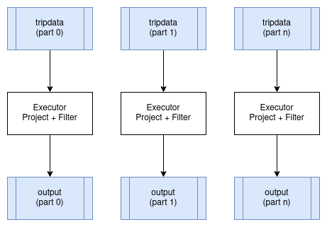
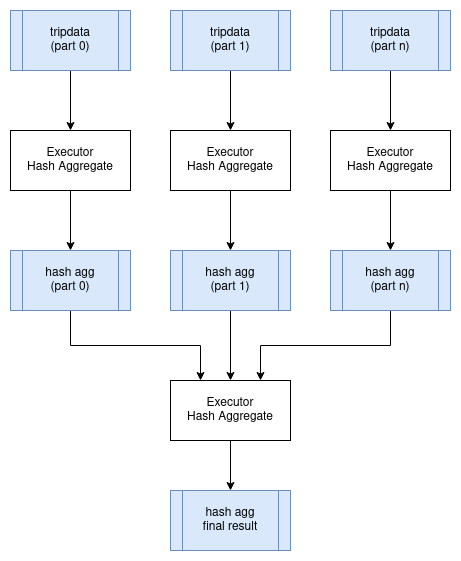
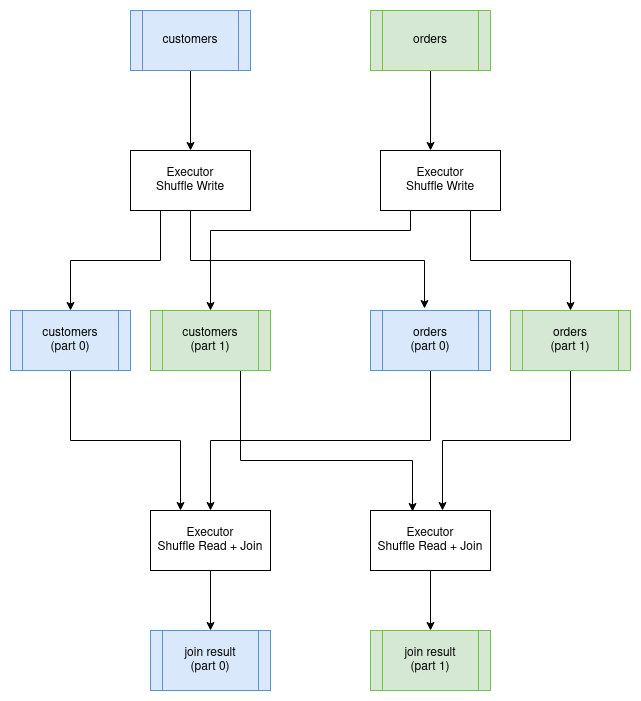
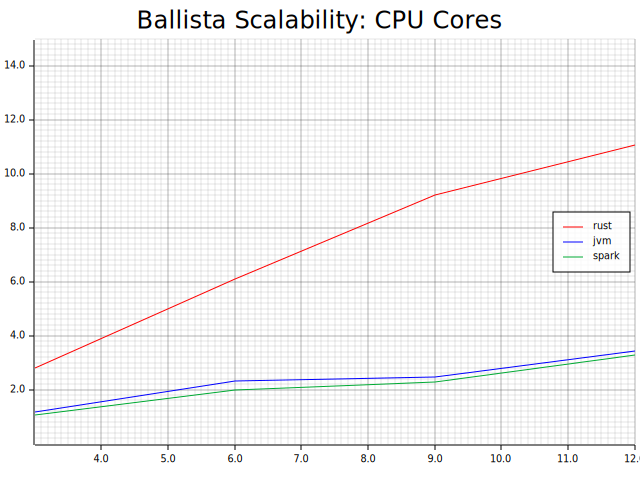

How Query Engines Work 中文版
阅读地址：https://hengfeiyang.github.io/how-query-engines-work-zh-CN/
英文原版：https://howqueryengineswork.com/
作者主页：https://andygrove.io/how-query-engines-work/
原文许可：Copyright © 2020-2023 Andy Grove. All rights reserved
译文许可：Creative Commons Attribution-ShareAlike 4.0 International License
该翻译项目已获得原作者 Andy Grove 授权许可
致谢
如果没有我家人的支持，这本书是不可能完成的，当我专注于又一个业余项目时，他们对我非常有耐心。
特别感谢马修·鲍尔斯（Matthew Powers），也就是Mr. Powers，是他首先激励我写这本书。Matthew 是《Writing Beautiful Apache Spark Code》一书的作者，该书也可以在 Leanpub 上找到。
我还需要感谢过去几年在我从事 DataFusion 项目时与我互动的无数人，特别是 Apache Arrow PMC、提交者和贡献者。
最后，我要感谢 Chris George 和 Joe Buszkiewic 在 RMS 工作期间的支持和鼓励，在那里我进一步加深了对查询引擎的理解。
这本书还可通过 https://leanpub.com/how-query-engines-work 购买 ePub、MOBI 和 PDF格式版本。
Copyright © 2020-2023 Andy Grove. All rights reserved.
简介
自从开始我的第一份软件工程工作以来，我就对数据库和查询语言着迷。向计算机提出问题并有效地获取有意义的数据几乎像魔法一样。在多年作为通用软件开发者和数据技术终端用户的经验后，我开始在一家初创公司工作，这让我深入到了分布式数据库开发的领域。当我开始这段旅程时，我多么希望这本书已经存在。虽然这只是一本入门级的书籍，但我希望能够揭开查询引擎如何工作的神秘面纱。
我对查询引擎的兴趣最终使我参与了 Apache Arrow 项目，我在 2018 年捐赠了最初的 Rust 实现，然后在 2019 年捐赠了 DataFusion 内存查询引擎，最后在 2021 年捐赠了 Ballista 分布式计算项目. 我不打算再构建 Arrow 项目之外的任何其他东西，并且现在我将继续为 Arrow 中的这些项目做出贡献。
Arrow 项目现在有许多活跃的提交者和贡献者致力于 Rust 实现，与我最初的贡献相比，已经有了显著的改进。
尽管 Rust 是高性能查询引擎的绝佳选择，但它并不适合教授查询引擎的相关概念，因此我在编写本书时使用 Kotlin 构建了一个新的查询引擎。Kotlin 是一种非常简洁且易于阅读的语言，使得可以在本书中包含源代码示例。我鼓励您在阅读本书时熟悉源代码，并考虑做出一些贡献。没有比动手实践更好的学习方法了！
本书中介绍的查询引擎最初打算作为 Ballista 项目（并曾经是）的一部分，但随着项目的发展，显然将查询引擎保留在 Rust 中并通过 UDF 机制支持 Java 和其他语言，而不是在多种语言中复制大量的查询执行逻辑更有意义。
现在 Ballista 已捐赠给 Apache Arrow，我已经更新了本书，将配套存储库中的查询引擎简称为“KQuery”，是 Kotlin 查询引擎的缩写，但如果有人有更好的名称建议，请告诉我！
本书内容更新将免费提供，请偶尔回来查看或者关注我的 Twitter (@andygrove_io) 以便在有新内容是收到通知。
反馈
如果您对这本书有任何反馈，请通过 Twitter @andygrove_io 向我发送私信或发送电子邮件至 agrove@apache.org。
这本书还可通过 https://leanpub.com/how-query-engines-work 购买 ePub、MOBI 和 PDF格式版本。
Copyright © 2020-2023 Andy Grove. All rights reserved.
什么是查询引擎？
查询引擎是一种软件，可以对数据执行查询以生成问题的答案，例如：
- 今年到目前为止，我的月平均销售额是多少？
- 过去一天我网站上最受欢迎的五个网页是什么？
- 与上一年相比，每月的网站流量如何？
最广泛使用的查询语言是结构化查询语言（简称SQL）。许多开发人员在其职业生涯的某个阶段都会遇到过关系数据库，例如 MySQL、Postgres、Oracle 或 SQL Server。所有这些数据库都包含支持 SQL 的查询引擎。
以下是一些 SQL 查询示例。
SQL 示例：月平均销售额
SELECT month, AVG(sales)
FROM product_sales
WHERE year = 2020
GROUP BY month;
SQL 示例：昨天排名前 5 的网页
SELECT page_url, COUNT(*) AS num_visits
FROM apache_log
WHERE event_date = yesterday()
GROUP BY page_url
ORDER BY num_visits DESC
LIMIT 5;
SQL 功能强大且被广泛理解，但在所谓的“大数据”世界中存在局限性，数据科学家通常需要将自定义代码与其查询混合在一起。现在，Apache Hadoop、Apache Hive 和 Apache Spark 等平台和工具现在广泛用于查询和操作海量数据。
以下示例演示了如何使用 Apache Spark 对 Parquet 数据集执行简单的聚合查询。Spark 的真正强大之处在于，该查询可以在笔记本电脑或数百台服务器的集群上运行，而无需更改代码。
Apache Spark 使用 DataFrame 查询示例
val spark: SparkSession = SparkSession.builder
.appName("Example")
.master("local[*]")
.getOrCreate()
val df = spark.read.parquet("/mnt/nyctaxi/parquet")
.groupBy("passenger_count")
.sum("fare_amount")
.orderBy("passenger_count")
df.show()
为什么查询引擎这么流行？
数据正以前所未有的速度增长，并且往往无法仅存储在单台计算机上。编写用于查询数据的分布式代码需要专业工程技能，并且每次需要从数据中获取新答案时都编写定制代码是不现实的。
查询引擎提供了一组标准操作和转换，最终用户可以通过简单的查询语言或应用程序编程接口以不同方式组合使用，并且调优以获得良好性能。
本书内容概述
本书提供了构建通用查询引擎所涉及的每个步骤的概览。
本书中讨论的查询引擎是专门为本书开发的简单查询引擎，代码是在编写本书内容的同时开发的，以确保我可以在面临设计决策时编写有关主题的内容。
源代码
本书中讨论的查询引擎的完整源代码位于以下 GitHub 存储库中。
https://github.com/andygrove/how-query-engines-work
请参阅项目中的README，获取使用Gradle构建项目的最新指南。
为什么使用 Kotlin？
本书的重点是查询引擎设计，这通常与编程语言无关。我之所以为这本书选择Kotlin，是因为它简洁易懂。它还与 Java 100% 兼容，这意味着您可以从 Java 和其他基于 Java 的语言（例如 Scala）调用 Kotlin 代码。
然而，Apache Arrow项目中的DataFusion查询引擎也主要基于本书的设计。对Rust比JVM更感兴趣的读者可以结合本书参考DataFusion源码。
这本书还可通过 https://leanpub.com/how-query-engines-work 购买 ePub、MOBI 和 PDF格式版本。
Copyright © 2020-2023 Andy Grove. All rights reserved.
Apache Arrow
Apache Arrow 最初是作为列式数据内存格式的规范而开始的，并以 Java 和 C++ 实现。这种内存格式对于在支持 SIMD（单指令，多数据）的现代硬件如 CPU 和 GPU 上进行向量化处理非常高效。
采用标准化的内存数据格式有几个好处：
- Python 或 Java 等高级语言可以通过传递指向数据的指针而不是以不同的格式复制数据（这将非常贵）来调用 Rust 或 C++ 等低级语言来执行计算密集型任务。
- 数据可以在进程之间有效地传输，而无需大量序列化开销，因为内存格式也是网络格式（尽管数据也可以被压缩）。
- 它应该使在数据科学和数据分析领域的各种开源和商业项目之间构建连接器、驱动程序和集成变得更加容易，并允许开发人员使用他们最喜欢的语言来利用这些平台。
Apache Arrow 现在有多种编程语言的实现，包括 C、C++、C#、Go、Java、JavaScript、Julia、MATLAB、Python、R、Ruby 和 Rust。
Arrow 内存模型
Arrow 网站 上详细描述了内存模型，但本质上每一列都由保存原始数据的单个向量表示，以及表示空值和可变宽度类型的原始数据偏移量的单独向量。
进程间通信（IPC）
正如我之前提到的，可以通过传递指向数据的指针来在进程之间传递数据。然而，接收进程需要知道如何解释这些数据，因此定义了 IPC 格式来交换元数据，例如结构信息。Arrow 使用 Google Flatbuffers 来定义元数据格式。
计算核心
Apache Arrow 的范围已经扩展到为评估表达式提供计算库。Java、C++、C、Python、Ruby、Go、Rust 和 JavaScript 实现包含了用于在 Arrow 内存上执行计算的计算库。
由于本书主要涉及 Java 实现，值得一提的是 Dremio 最近捐赠了 Gandiva，这是一个将表达式编译为 LLVM 并支持 SIMD 的 Java 库。JVM 开发人员可以将操作委托给 Gandiva 库，并从 Java 本身无法实现的性能提升中获益。
Arrow Flight 协议
最近，Arrow 定义了一种用于高效地在网络上流式传输 Arrow 数据的 Flight 协议，Flight 协议基于 gRPC 和 Google Protocol Buffers。
Flight 协议定义了一个 FlightService，具有以下方法：
Handshake
客户端和服务端之间的握手。根据服务端的不同，可能需要握手来确定应用于未来操作的 Token。根据验证机制请求和响应都是允许多次往返的数据流。
ListFlights
给定特定条件获取可用流列表。大多数 flight 服务都会公开一个或多个可供检索的流。此 API 允许列出可供使用的流。用户还可以提供条件，这些条件可以限制可以通过此接口列出的流的子集。每个 flight 服务都允许自己定义如何使用的条件。
GetFlightInfo
对于给定的 FlightDescriptor，获取有关如何使用 flight 的信息。如果接口的消费者已经可以识别要使用的特定 flight，那么这是一个有用的接口。该接口还可以允许消费者通过指定的 descriptor 生成 flight 流。例如，一个 flight descriptor 可能包含将执行的 SQL 语句或 Pickled Python 操作。在这些情况下，之前在 ListFilghts 可用流列表中未提供的流，反而在特定的 Flight 服务定义的期间可用。
GetSchema
对于给定的 FlightDescriptor，获取在 Schema.fbs::Schema 中描述的结构。当消费者需要 flight 流的结构时使用此功能。与 GetFlightInfo 类似，此接口可能会生成一个以前在 ListFlights 中不可用的新 flight。
DoGet
检索与引用 ticket 相关的特定描述符所关联的单个流。一个 Flight 可以由一个或多个流组成，其中每个流都可以使用一个独立的 Flight 服务用来管理数据流集合的 opaque ticket 进行检索。
DoPut
将流推送到与特定 flight 流关联的 flight 服务。这允许 flight 服务的客户端上传数据流。根据特定的 flight 服务，可以允许客户端消费者上传每个描述符的单个流或无限数量的流。后者，服务可能会实现 “seal” 操作，一旦所有流都上传完毕，该操作就可以应用于描述符。
DoExchange
为给定描述符打开双向数据通道。这允许客户端在单个逻辑流中发送和接收任意 Arrow 数据和应用程序的特定元数据。与 DoGet/DoPut 相比，这更适合客户端将计算（而不是存储）卸载到 Flight 服务。
DoAction
除了可能可用的 ListFlights、GetFlightInfo、DoGet、DoPut 操作之外， flight 服务还可以支持任意数量的简单操作。DoAction 允许 flight 客户端针对 flight 服务执行特定操作。一个操作包括特定于正在执行的操作类型的不透明请求和响应对象。
ListActions
一个 flight 服务公开其所有可用操作类型及其描述。这使得不同的 flight 消费者能够了解 flight 服务的功能。
Arrow Flight SQL
有人提议向 Arrow Flight 添加 SQL 功能。在撰写本文时（2021年1月），已经有一个针对 C++ 实现的 PR，跟踪问题为 ARROW-14698。
查询引擎
DataFusion
Arrow 的 Rust 实现包含一个名为 DataFusion 的内存查询引擎，该引擎于 2019 年捐赠给该项目。该项目正在迅速成熟，并越来越受到关注。例如，InfluxData 正在利用 DataFusion 构建下一代 InfluxDB 的核心。
Ballista
Ballista 是一个分布式计算平台，主要用 Rust 实现，并由 Apache Arrow 提供支持。它构建了一种架构允许其他编程语言（例如 Python、C++ 和 Java）作为一等公民而无需额外序列化成本。
Ballista 中的基础技术包括：
- Apache Arrow 用于内存模型和类型系统。
- Apache Arrow Flight 协议用于进程间高效数据传输。
- Apache Arrow Flight SQL 协议供商业智能工具和JDBC驱动程序连接到 Ballista 集群。
- Google Protocol Buffers 用于序列化查询计划。
- Docker 用于打包执行器以及用户定义代码。
- Kubernetes 用于部署和管理执行器 docker 容器。
Ballista 于 2021 年捐赠给 Arrow 项目，虽然能够以良好的性能运行流行的 TPC-H 基准测试中的大量查询，但尚未准备好投入生产使用。
C++ 查询引擎
C++ 实现正在进行添加查询引擎的工作，当前的重点是实现高效的计算原语和数据集 API。
这本书还可通过 https://leanpub.com/how-query-engines-work 购买 ePub、MOBI 和 PDF格式版本。
Copyright © 2020-2023 Andy Grove. All rights reserved.
选择一个类型系统
本章所讨论的源代码可以在 KQuery 项目 的 datatypes 模块中找到。
构建查询引擎的第一步是选择一个类型系统来表示查询引擎将要处理的不同类型的数据。一种选择是发明一种专门针对查询引擎的专有类型系统。另一种选择是使用查询引擎索要查询的数据源的类型系统。
如果查询引擎要支持查询多个数据源（通常是这种情况），那么每个支持的数据源和查询引擎的类型系统之间可能需要进行一些转换，因此使用一个能够代表所有支持的数据源的所有数据类型的类型系统将非常重要。
基于行还是基于列？
一个重要的考虑因素是查询引擎将逐行处理数据还是以列式格式表示数据。
如今许多的查询引擎都是基于 Volcano Query Planner，其在物理计划中每个步骤本质上都是对行进行迭代。这种模型易于实现，但在对数十亿行运行查询时往往会导致每行开销迅速增加。通过对数据进行批量迭代，可以减少这种开销。此外，如果这些批量数据以列的方式而不是行的方式表示数据，那么就可以使用 “向量化处理” 并利用 SIMD (单指令多数据) 的优势，用单条 CPU 指令处理一列中的多个值。这个概念还可以更进一步，利用 GPU 来并行处理更大量的数据。
互操作性
另一个考虑因素是我们可能希望使我们的查询引擎可以通过多种编程语言访问。查询引擎的用户通常使用 Python、R 或 Java 等语言。我们可能还希望构建 ODBC 或 JDBC 驱动程序，以便轻松构建集成。
考虑到这些需求，最好找到一个行业标准来表示列式数据并高效地在进程之间交换这些数据。
我相信 Apache Arrow 提供了理想的基础，这一点可能并不奇怪。
类型系统
我们将使用 Apache Arrow 作为我们类型系统的基础。以下 Arrow 类用于表示结构、字段和数据类型。
- Schema 为数据源或查询结果提供元数据，结构由一个或多个字段组成。
- Field 为结构中字段的名称和数据类型，并指定它是否允许空值。
- FieldVector 为字段数据提供列式存储。
- ArrowType 表示一种数据类型。
KQuery 引入了一些额外的类和助手作为对 Apache Arrow 类型系统的抽象。
KQuery 为受支持的 Arrow 数据类型提供了可引用的常量。
object ArrowTypes {
val BooleanType = ArrowType.Bool()
val Int8Type = ArrowType.Int(8, true)
val Int16Type = ArrowType.Int(16, true)
val Int32Type = ArrowType.Int(32, true)
val Int64Type = ArrowType.Int(64, true)
val UInt8Type = ArrowType.Int(8, false)
val UInt16Type = ArrowType.Int(16, false)
val UInt32Type = ArrowType.Int(32, false)
val UInt64Type = ArrowType.Int(64, false)
val FloatType = ArrowType.FloatingPoint(FloatingPointPrecision.SINGLE)
val DoubleType = ArrowType.FloatingPoint(FloatingPointPrecision.DOUBLE)
val StringType = ArrowType.Utf8()
}
KQuery 并没有直接使用 FieldVector，而是引入了一个 ColumnVector 接口作为抽象，以提供更方便的访问方法，从而避免了为每种数据类型都使用特定的 FieldVector 实现。
interface ColumnVector {
fun getType(): ArrowType
fun getValue(i: Int) : Any?
fun size(): Int
}
这种抽象也使得标量值的实现成为可能，从而避免了用字面量为列中每个索引重复创建和填入 FieldVector。
class LiteralValueVector(
val arrowType: ArrowType,
val value: Any?,
val size: Int) : ColumnVector {
override fun getType(): ArrowType {
return arrowType
}
override fun getValue(i: Int): Any? {
if (i<0 || i>=size) {
throw IndexOutOfBoundsException()
}
return value
}
override fun size(): Int {
return size
}
}
KQuery 还提供了一个 RecordBatch 类来表示一批列式数据。
class RecordBatch(val schema: Schema, val fields: List<ColumnVector>) {
fun rowCount() = fields.first().size()
fun columnCount() = fields.size
/** Access one column by index */
fun field(i: Int): ColumnVector {
return fields[i]
}
}
这本书还可通过 https://leanpub.com/how-query-engines-work 购买 ePub、MOBI 和 PDF格式版本。
Copyright © 2020-2023 Andy Grove. All rights reserved.
数据源
本章所讨论的源代码可以在 KQuery 项目 的 datasource 模块中找到。
查询引擎如果没有数据源可读取，那么它几乎无用武之地。我们希望能够支持多个数据源，因此创建一个接口让查询引擎能与数据源交互非常重要。这还允许用户将我们的查询引擎与他们的自定义数据源配合使用。数据源通常是文件或数据库，但也可以是内存中的对象。
数据源接口
在查询计划阶段，了解数据源的结构非常重要，以便可以验证查询计划以确保引用的列存在并且数据类型与用于引用它们的表达式兼容。在某些情况下，结构可能不可用，因为某些数据源没有固定结构，通常称为“无结构（schema-less）”。 JSON 文档便是一种无结构数据源的例子。
在查询执行阶段，我们需要能够从数据源获取数据，并且需要能够指定将哪些列加载到内存中以提高效率。如果查询不涉及这些列，则没必要将其加载到内存中。
KQuery 数据源接口
interface DataSource {
/** Return the schema for the underlying data source */
fun schema(): Schema
/** Scan the data source, selecting the specified columns */
fun scan(projection: List<String>): Sequence<RecordBatch>
}
数据源示例
在数据科学或分析领域经常遇到许多数据源。
逗号分隔值 (CSV)
CSV 文件是文本文件，每行一条记录，字段之间用逗号分隔，因此称为“逗号分隔值”。 CSV 文件不包含结构信息（文件第一行的可选列名称除外），尽管可以通过先读取文件来推导出结构，这可能是一项昂贵的操作。
JSON
JavaScript 对象表示法格式 (JSON) 是另一种流行的基于文本的文件格式。与 CSV 文件不同，JSON 文件是结构化的并且可以存储复杂的嵌套数据类型。
Parquet
Parquet 旨在提供压缩、高效的列式数据表示，是 Hadoop 生态系统中流行的文件格式。Parquet 从一开始就考虑到了复杂的嵌套数据结构，并使用 Dremel 论文中描述的record shredding and assembly algorithm 算法构建。
Parquet 文件包含结构信息和批量存储的数据（称为“row groups”），其中每个批次若干列组成。row groups 可以包含压缩数据，还可以包含可选元数据，例如每列的最小值和最大值。查询引擎以使用此元数据来确定在扫描期间何时可以跳过某些 row groups。
Orc
The Optimized Row Columnar (Orc) 优化行列 格式类似于 Parquet，数据以称为 “stripes” 的列式格式批量存储。
这本书还可通过 https://leanpub.com/how-query-engines-work 购买 ePub、MOBI 和 PDF格式版本。
Copyright © 2020-2023 Andy Grove. All rights reserved.
逻辑计划和表达式
本章所讨论的源代码可以在 KQuery 项目 的 logical-plan 模块中找到。
逻辑计划表示具有已知结构的关系（一组元组）。每个逻辑计划可以有零个或多个逻辑计划作为输入。逻辑计划可以很方便地公开其子计划，以便可以使用访问者模式来遍历该计划。
interface LogicalPlan {
fun schema(): Schema
fun children(): List<LogicalPlan>
}
打印逻辑计划
能够以人类可读形式打印逻辑计划对于帮助调试非常重要。逻辑计划通常打印为带有缩进子节点的分层结构。
我们可以实现一个简单的递归辅助函数来格式化逻辑计划。
fun format(plan: LogicalPlan, indent: Int = 0): String {
val b = StringBuilder()
0.rangeTo(indent).forEach { b.append("\t") }
b.append(plan.toString()).append("\n")
plan.children().forEach { b.append(format(it, indent+1)) }
return b.toString()
}
以下是使用此方法格式化逻辑计划的一个例子。
Projection: #id, #first_name, #last_name, #state, #salary
Filter: #state = 'CO'
Scan: employee.csv; projection=None
序列化
有时希望能够序列化查询计划，以便可以轻松地将它们转移到另一个进程。最好尽早添加序列化，以防止意外引用无法序列化的数据结构（如文件句柄或数据库连接）。
一种方法是使用实现语言的默认机制将数据结构序列化/反序列化为 JSON 等格式。在 Java 中可以使用 Jackson 库，Kotlin 有 kotlinx.serialization 库，Rust 则有 serde crate等。
另一种选择可能是定义一种与语言无关的序列化格式，如 Avro、Thrift 或 Protocol Buffers，然后编写代码在此格式和特定于语言实现之间进行转换。
自本书第一版发来以来，出现了一个名为 “substrait” 的新标准，其目标是为关系代数提供跨语言序列化。我对这个项目感到很兴奋，并预测它将成为表示查询计划的事实上的标准，并开辟许多集成的可能性。例如，可以使用成熟的基于 Java 的查询计划程序（例如 Apache Calcite），以 Substrait 格式序列化计划，然后在以较低级别语言（例如 C++ 或 Rust）实现的查询引擎中执行计划。欲了解更多信息，请访问 https://substrait.io/。
逻辑表达式 Logical Expressions
表达式这一概念是查询计划的基本构建块之一，其可以在运行时对数据进行求值。
以下是查询引擎中通常支持的一些表达式示例。
| 表达式 | 示例 |
|---|---|
| Literal Value | "hello", 12.34 |
| Column Reference | user_id, first_name, last_name |
| Math Expression | salary * state_tax |
| Comparison Expression | x >= y |
| Boolean Expression | birthday = today() AND age >= 21 |
| Aggregate Expression | MIN(salary), MAX(salary), SUM(salary), AVG(salary), COUNT(*) |
| Scalar Function | CONCAT(first_name, " ", last_name) |
| Aliased Expression | salary * 0.02 AS pay_increase |
当然，所有这些表达式都可以组合形成深层嵌套的表达式树。表达式求值是递归编程的典型案例。
在规划查询时，我们需要了解有关表达式输出的一些基本元数据。具体来说，我们需要为表达式指定一个名称，以便其他表达式可以引用它，并且我们需要知道表达式求值时将生成的值的数据类型，以便我们可以验证查询计划是否有效。例如，如果我们有一个表达式 a + b ，那么只有当 a 和 b 都是数值类型时才有效。
还需注意，表达式的数据类型可能取决于输入数据。例如，列引用将具有它所引用的列的数据类型，但比较表达式始终返回布尔值。
interface LogicalExpr {
fun toField(input: LogicalPlan): Field
}
列式表达式 Column Expressions
Column 表达式仅代表对一个命名列的引用。该表达式的元数据是通过在输入中查找指定列并返回该列的元数据而派生的。请注意，此处的术语 Column 指的是由输入逻辑计划生成的列，并且可以表示数据源中的列，或者它可以表示针对其他输入求值的表达式的结果。
class Column(val name: String): LogicalExpr {
override fun toField(input: LogicalPlan): Field {
return input.schema().fields.find { it.name == name } ?:
throw SQLException("No column named '$name'")
}
override fun toString(): String {
return "#$name"
}
}
字面量表达式 Literal Expressions
我们需要能够将字面量表示为表达式的能力，以便我们可以编写像 salary * 0.05 这样的表达式。
这是一个用于字符串字面量的表达式示例。
class LiteralString(val str: String): LogicalExpr {
override fun toField(input: LogicalPlan): Field {
return Field(str, ArrowTypes.StringType)
}
override fun toString(): String {
return "'$str'"
}
}
这是一个用于长整型字面值的表达式示例。
class LiteralLong(val n: Long): LogicalExpr {
override fun toField(input: LogicalPlan): Field {
return Field(n.toString(), ArrowTypes.Int64Type)
}
override fun toString(): String {
return n.toString()
}
}
二元表达式 Binary Expressions
二元表达式简单来说就是只接受两个输入的表达式。我们将实现三类二元表达式，即比较表达式、布尔表达式和数学表达式。因为所有这些的字符串表示形式都是相同的，我们可以使用一个公共基类来提供toString方法。变量 “l” 和 “r” 分别指左输入和右输入。
abstract class BinaryExpr(
val name: String,
val op: String,
val l: LogicalExpr,
val r: LogicalExpr) : LogicalExpr {
override fun toString(): String {
return "$l $op $r"
}
}
比如 = 或 < 这样的比较表达式会比较两个相同数据类型的值，并返回一个布尔值。我们还需要实现布尔运算符 AND 和 OR ，它们也接受两个参数并产生一个布尔结果，因此我们也可以为这些运算符使用一个公共基类。
abstract class BooleanBinaryExpr(
name: String,
op: String,
l: LogicalExpr,
r: LogicalExpr) : BinaryExpr(name, op, l, r) {
override fun toField(input: LogicalPlan): Field {
return Field(name, ArrowTypes.BooleanType)
}
}
该基类提供了一种简洁的方式来实现具体的比较表达式。
比较表达式 Comparison Expressions
/** Equality (`=`) comparison */
class Eq(l: LogicalExpr, r: LogicalExpr)
: BooleanBinaryExpr("eq", "=", l, r)
/** Inequality (`!=`) comparison */
class Neq(l: LogicalExpr, r: LogicalExpr)
: BooleanBinaryExpr("neq", "!=", l, r)
/** Greater than (`>`) comparison */
class Gt(l: LogicalExpr, r: LogicalExpr)
: BooleanBinaryExpr("gt", ">", l, r)
/** Greater than or equals (`>=`) comparison */
class GtEq(l: LogicalExpr, r: LogicalExpr)
: BooleanBinaryExpr("gteq", ">=", l, r)
/** Less than (`<`) comparison */
class Lt(l: LogicalExpr, r: LogicalExpr)
: BooleanBinaryExpr("lt", "<", l, r)
/** Less than or equals (`<=`) comparison */
class LtEq(l: LogicalExpr, r: LogicalExpr)
: BooleanBinaryExpr("lteq", "<=", l, r)
布尔表达式 Boolean Expressions
该基类还提供了一种简洁的方式来实现具体的布尔逻辑表达式。
/** Logical AND */
class And(l: LogicalExpr, r: LogicalExpr)
: BooleanBinaryExpr("and", "AND", l, r)
/** Logical OR */
class Or(l: LogicalExpr, r: LogicalExpr)
: BooleanBinaryExpr("or", "OR", l, r)
数学表达式 Math Expressions
数学表达式是二元表达式的另一种特殊形式。数学表达式通常对相同数据类型的值进行运算并产生相同数据类型的结果。
abstract class MathExpr(
name: String,
op: String,
l: LogicalExpr,
r: LogicalExpr) : BinaryExpr(name, op, l, r) {
override fun toField(input: LogicalPlan): Field {
return Field("mult", l.toField(input).dataType)
}
}
class Add(l: LogicalExpr, r: LogicalExpr) : MathExpr("add", "+", l, r)
class Subtract(l: LogicalExpr, r: LogicalExpr) : MathExpr("subtract", "-", l, r)
class Multiply(l: LogicalExpr, r: LogicalExpr) : MathExpr("mult", "*", l, r)
class Divide(l: LogicalExpr, r: LogicalExpr) : MathExpr("div", "/", l, r)
class Modulus(l: LogicalExpr, r: LogicalExpr) : MathExpr("mod", "%", l, r)
聚合表达式 Aggregate Expressions
聚合表达式对输入表达式执行聚合函数，如 MIN、MAX、COUNT、SUM 或者 AVG 等。
abstract class AggregateExpr(
val name: String,
val expr: LogicalExpr) : LogicalExpr {
override fun toField(input: LogicalPlan): Field {
return Field(name, expr.toField(input).dataType)
}
override fun toString(): String {
return "$name($expr)"
}
}
对于聚合数据类型与输入类型相同的聚合表达式，我们可以简单地扩展这个基类。
class Sum(input: LogicalExpr) : AggregateExpr("SUM", input)
class Min(input: LogicalExpr) : AggregateExpr("MIN", input)
class Max(input: LogicalExpr) : AggregateExpr("MAX", input)
class Avg(input: LogicalExpr) : AggregateExpr("AVG", input)
对于数据类型不依赖于输入类型的聚合表达式，我们需要重写 toField 方法。例如，“COUNT” 聚合表达式无论计数值的数据类型为何，总是产生一个整数结果。
class Count(input: LogicalExpr) : AggregateExpr("COUNT", input) {
override fun toField(input: LogicalPlan): Field {
return Field("COUNT", ArrowTypes.Int32Type)
}
override fun toString(): String {
return "COUNT($expr)"
}
}
逻辑计划 Logical Plans
有了逻辑表达式，逻辑表达式就位后，我们现在可以为查询引擎支持的各种转换实现逻辑计划。
扫描 Scan
扫描（Scan） 逻辑计划表示根据可选 映射（projection）从一个 数据源（DataSource） 中获取数据。在我们查询引擎中 扫描（Scan） 逻辑计划是唯一没有其他逻辑计划作为输入的逻辑计划，它是查询树中的叶节点。
class Scan(
val path: String,
val dataSource: DataSource,
val projection: List<String>): LogicalPlan {
val schema = deriveSchema()
override fun schema(): Schema {
return schema
}
private fun deriveSchema() : Schema {
val schema = dataSource.schema()
if (projection.isEmpty()) {
return schema
} else {
return schema.select(projection)
}
}
override fun children(): List<LogicalPlan> {
return listOf()
}
override fun toString(): String {
return if (projection.isEmpty()) {
"Scan: $path; projection=None"
} else {
"Scan: $path; projection=$projection"
}
}
}
映射 Projection
映射（Projection） 逻辑计划对其输入应用映射。一个映射是对输入数据进行求值的一系列表达式列表。有时候这是一个简单的字段列表, 比如 SELECT a, b, c FROM foo, 但也可能包括任何其他支持的表达式，一个更复杂例子可能是： SELECT (CAST(a AS float) * 3.141592)) AS my_float FROM foo。
class Projection(
val input: LogicalPlan,
val expr: List<LogicalExpr>): LogicalPlan {
override fun schema(): Schema {
return Schema(expr.map { it.toField(input) })
}
override fun children(): List<LogicalPlan> {
return listOf(input)
}
override fun toString(): String {
return "Projection: ${ expr.map {
it.toString() }.joinToString(", ")
}"
}
}
筛选（也称为过滤器） Selection (also known as Filter)
筛选（Selection） 逻辑计划通过应用过滤器表达式来确定应在其输出中选择（包含）哪些行。这在 SQL 中用 WHERE 子句表示。一个简单例子可能是：SELECT * FROM foo WHERE a > 5，过滤器表达式需要求值出一个布尔结果。
class Selection(
val input: LogicalPlan,
val expr: Expr): LogicalPlan {
override fun schema(): Schema {
// selection does not change the schema of the input
return input.schema()
}
override fun children(): List<LogicalPlan> {
return listOf(input)
}
override fun toString(): String {
return "Filter: $expr"
}
}
聚合 Aggregate
聚合（Aggregate） 逻辑计划远比 映射（Projection）、筛选（Selection） 或者 扫描（Scan） 复杂，并且能够计算出底层数据如 最小值、最大值、平均值 和 总和 等聚集信息。聚合通常按其他列（或表达式）进行分组。一个简单例子可能是：SELECT job_title, AVG(salary) FROM employee GROUP BY job_title。
class Aggregate(
val input: LogicalPlan,
val groupExpr: List<LogicalExpr>,
val aggregateExpr: List<AggregateExpr>) : LogicalPlan {
override fun schema(): Schema {
return Schema(groupExpr.map { it.toField(input) } +
aggregateExpr.map { it.toField(input) })
}
override fun children(): List<LogicalPlan> {
return listOf(input)
}
override fun toString(): String {
return "Aggregate: groupExpr=$groupExpr, aggregateExpr=$aggregateExpr"
}
}
请注意，在此实现中，聚合计划的输出是通过分组列和聚合表达式来组织的。通常需要将聚合逻辑计划包装在映射中，以便按照原始查询中的请求顺序返回列。
这本书还可通过 https://leanpub.com/how-query-engines-work 购买 ePub、MOBI 和 PDF格式版本。
Copyright © 2020-2023 Andy Grove. All rights reserved.
构建逻辑计划
本章所讨论的源代码可以在 KQuery 项目 的 dataframe 模块中找到。
用困难的方式构建逻辑计划
既然我们已经为逻辑计划的子集定义了类，我们就可以以编程方式组合它们。
这里有一些具体的代码，用于构建针对包含列 id, first_name, last_name, state, job_title, salary 的 CSV 文件的查询 SELECT * FROM employee WHERE state = 'CO' 的计划。
// create a plan to represent the data source
val csv = CsvDataSource("employee.csv")
// create a plan to represent the scan of the data source (FROM)
val scan = Scan("employee", csv, listOf())
// create a plan to represent the selection (WHERE)
val filterExpr = Eq(Column("state"), LiteralString("CO"))
val selection = Selection(scan, filterExpr)
// create a plan to represent the projection (SELECT)
val projectionList = listOf(Column("id"),
Column("first_name"),
Column("last_name"),
Column("state"),
Column("salary"))
val plan = Projection(selection, projectionList)
// print the plan
println(format(plan))
此操作将打印以下计划：
Projection: #id, #first_name, #last_name, #state, #salary
Filter: #state = 'CO'
Scan: employee; projection=None
同样的代码也可以像这样写得更加简洁：
val plan = Projection(
Selection(
Scan("employee", CsvDataSource("employee.csv"), listOf()),
Eq(Column(3), LiteralString("CO"))
),
listOf(Column("id"),
Column("first_name"),
Column("last_name"),
Column("state"),
Column("salary"))
)
println(format(plan))
虽然这样更加简洁，但也更难以解释，所以最好能有一种更优雅的方式来创建逻辑计划。这就是 DataFrame 接口能够帮助到我们的地方。
使用 DataFrame 构建逻辑计划
实现一个 DataFrame 风格的 API 允许我们以一种更加用户友好的方式构建逻辑查询计划。DataFrame 只是逻辑查询计划的抽象，并且具有执行转换和操作的方法。它类似于 fluent-style 的构建器 API。
这是一个 DataFrame 接口的最小化示例，它允许我们将 映射（projection）和 过滤器（selection）应用于现有的 DataFrame。
interface DataFrame {
/** Apply a projection */
fun project(expr: List<LogicalExpr>): DataFrame
/** Apply a filter */
fun filter(expr: LogicalExpr): DataFrame
/** Aggregate */
fun aggregate(groupBy: List<LogicalExpr>,
aggregateExpr: List<AggregateExpr>): DataFrame
/** Returns the schema of the data that will be produced by this DataFrame. */
fun schema(): Schema
/** Get the logical plan */
fun logicalPlan() : LogicalPlan
}
下面是这个接口的实现。
class DataFrameImpl(private val plan: LogicalPlan) : DataFrame {
override fun project(expr: List<LogicalExpr>): DataFrame {
return DataFrameImpl(Projection(plan, expr))
}
override fun filter(expr: LogicalExpr): DataFrame {
return DataFrameImpl(Selection(plan, expr))
}
override fun aggregate(groupBy: List<LogicalExpr>,
aggregateExpr: List<AggregateExpr>): DataFrame {
return DataFrameImpl(Aggregate(plan, groupBy, aggregateExpr))
}
override fun schema(): Schema {
return plan.schema()
}
override fun logicalPlan(): LogicalPlan {
return plan
}
}
在应用 映射（projection）或 过滤器（selection）之前，我们需要一种方法来创建表示底层数据源的初始 DataFrame。这通常是通过执行上下文获得的。
这是执行上下文的一个简单开始，我们稍后将对其进行增强。
class ExecutionContext {
fun csv(filename: String): DataFrame {
return DataFrameImpl(Scan(filename, CsvDataSource(filename), listOf()))
}
fun parquet(filename: String): DataFrame {
return DataFrameImpl(Scan(filename, ParquetDataSource(filename), listOf()))
}
}
有了这些基础工作，我们现在可以使用上下文和 DataFrame API 创建逻辑查询计划。
val ctx = ExecutionContext()
val plan = ctx.csv("employee.csv")
.filter(Eq(Column("state"), LiteralString("CO")))
.select(listOf(Column("id"),
Column("first_name"),
Column("last_name"),
Column("state"),
Column("salary")))
尽管如此清晰直观，但我们还能进一步添加一些方便的方法使其变得更易理解。这是 Kotlin 特有的，但其他语言也有类似的概念。
我们可以创建一些方便的方法来创建支持的表达式对象。
fun col(name: String) = Column(name)
fun lit(value: String) = LiteralString(value)
fun lit(value: Long) = LiteralLong(value)
fun lit(value: Double) = LiteralDouble(value)
我们还可以在 LogicalExpr 接口上定义中缀运算符来构建二元表达式。
infix fun LogicalExpr.eq(rhs: LogicalExpr): LogicalExpr { return Eq(this, rhs) }
infix fun LogicalExpr.neq(rhs: LogicalExpr): LogicalExpr { return Neq(this, rhs) }
infix fun LogicalExpr.gt(rhs: LogicalExpr): LogicalExpr { return Gt(this, rhs) }
infix fun LogicalExpr.gteq(rhs: LogicalExpr): LogicalExpr { return GtEq(this, rhs) }
infix fun LogicalExpr.lt(rhs: LogicalExpr): LogicalExpr { return Lt(this, rhs) }
infix fun LogicalExpr.lteq(rhs: LogicalExpr): LogicalExpr { return LtEq(this, rhs) }
有了这些方便的方法，我们现在可以编写富有表达力的代码来构建我们的逻辑查询计划了。
val df = ctx.csv(employeeCsv)
.filter(col("state") eq lit("CO"))
.select(listOf(
col("id"),
col("first_name"),
col("last_name"),
col("salary"),
(col("salary") mult lit(0.1)) alias "bonus"))
.filter(col("bonus") gt lit(1000))
这本书还可通过 https://leanpub.com/how-query-engines-work 购买 ePub、MOBI 和 PDF格式版本。
Copyright © 2020-2023 Andy Grove. All rights reserved.
物理计划和表达式
本章所讨论的源代码可以在 KQuery 项目 的 physical-plan 模块中找到。
第五章定义的逻辑计划指明了要做什么，但没有说明如何去做，将逻辑计划和物理计划分开是一个好习惯，尽管可以将它们结合起来以降低复杂性。
将逻辑计划和物理计划分开的原因之一是，有时可以有多种方法来执行特定操作，这意味着逻辑计划和物理计划之间存在一对多的关系。
例如，单进程与分布式执行、CPU 与 GPU 执行可能有不同的物理计划。
此外，诸如 聚合（Aggregate） 和 联表（Join） 之类的操作可以通过各种算法实现，并且具有不同的性能权衡。当聚合已经按 分组字段（grouping keys）排序的数据时，使用 Group Aggregate（也称为Sort Aggregate）非常有效，它一次只需要保存一组 分组字段（grouping keys）的状态，并且可以在一组数据处理完毕立即给出结果。如果数据未排序，则通常使用哈希聚合，哈希聚合通过对键进行分组来维护一个 HashMap 累加器。
联表则有更广泛的算法选择，包括 嵌套循环连接（Nested Loop Join）、排序合并连接（Sort-Merge Join）和 哈希连接（Hash Join）。
物理计划返回 记录批次（record batches）的迭代器。
interface PhysicalPlan {
fun schema(): Schema
fun execute(): Sequence<RecordBatch>
fun children(): List<PhysicalPlan>
}
物理表达式 Physical Expressions
我们已经定义了逻辑计划中引用的逻辑表达式，但现在需要实现包含代码的物理表达式类，以在运行时计算表达式。
每个逻辑表达式可以有多个物理表达式实现。例如，对于将两个数字相加的逻辑表达式 AddExpr，我们可以有一种使用 CPU 的实现和一种使用 GPU 的实现。查询规划器可以根据运行代码的服务器的硬件能力来选择使用哪一个。
物理表达式是针对 记录批次（record batches）进行计算的，其结果是列。
以下是我们将用来表示物理表达式的接口。
interface Expression {
fun evaluate(input: RecordBatch): ColumnVector
}
列表达式 Column Expressions
Column 表达式简单地求值为对正在处理的 RecordBatch 中的 ColumnVector 的引用。Column 的逻辑表达式通过名称引用输入，这对编写查询来说是用户友好的，但对于物理表达式，我们希望避免每次评估表达式时都进行名称查找的成本，因此它改为通过索引引用列。
class ColumnExpression(val i: Int) : Expression {
override fun evaluate(input: RecordBatch): ColumnVector {
return input.field(i)
}
override fun toString(): String {
return "#$i"
}
}
字面量表达式 Literal Expressions
字面量表达式的物理实现就是一个包装在类中的字面值，该类实现了相应特性并为列中每个索引提供相同的值。
class LiteralValueVector(
val arrowType: ArrowType,
val value: Any?,
val size: Int) : ColumnVector {
override fun getType(): ArrowType {
return arrowType
}
override fun getValue(i: Int): Any? {
if (i<0 || i>=size) {
throw IndexOutOfBoundsException()
}
return value
}
override fun size(): Int {
return size
}
}
有了这个类，我们就可以为每种数据类型的字面量表达式创建物理表达式。
class LiteralLongExpression(val value: Long) : Expression {
override fun evaluate(input: RecordBatch): ColumnVector {
return LiteralValueVector(ArrowTypes.Int64Type,
value,
input.rowCount())
}
}
class LiteralDoubleExpression(val value: Double) : Expression {
override fun evaluate(input: RecordBatch): ColumnVector {
return LiteralValueVector(ArrowTypes.DoubleType,
value,
input.rowCount())
}
}
class LiteralStringExpression(val value: String) : Expression {
override fun evaluate(input: RecordBatch): ColumnVector {
return LiteralValueVector(ArrowTypes.StringType,
value.toByteArray(),
input.rowCount())
}
}
二元表达式 Binary Expressions
对于二元表达式，我们需要计算左右输入表达式，然后根据这些输入值计算特定的二元运算符，因此我们可以提供一个基类来简化每个运算符的实现。
abstract class BinaryExpression(val l: Expression, val r: Expression) : Expression {
override fun evaluate(input: RecordBatch): ColumnVector {
val ll = l.evaluate(input)
val rr = r.evaluate(input)
assert(ll.size() == rr.size())
if (ll.getType() != rr.getType()) {
throw IllegalStateException(
"Binary expression operands do not have the same type: " +
"${ll.getType()} != ${rr.getType()}")
}
return evaluate(ll, rr)
}
abstract fun evaluate(l: ColumnVector, r: ColumnVector) : ColumnVector
}
比较表达式 Comparison Expressions
比较表达式只是简单地比较两个输入列中的所有值并生成包含结果的新列（位向量 bit vector）。
以下是相等运算符的一个例子。
class EqExpression(l: Expression,
r: Expression): BooleanExpression(l,r) {
override fun evaluate(l: Any?, r: Any?, arrowType: ArrowType) : Boolean {
return when (arrowType) {
ArrowTypes.Int8Type -> (l as Byte) == (r as Byte)
ArrowTypes.Int16Type -> (l as Short) == (r as Short)
ArrowTypes.Int32Type -> (l as Int) == (r as Int)
ArrowTypes.Int64Type -> (l as Long) == (r as Long)
ArrowTypes.FloatType -> (l as Float) == (r as Float)
ArrowTypes.DoubleType -> (l as Double) == (r as Double)
ArrowTypes.StringType -> toString(l) == toString(r)
else -> throw IllegalStateException(
"Unsupported data type in comparison expression: $arrowType")
}
}
}
数学表达式 Math Expressions
数学表达式的实现与比较表达式的代码非常相似。一个基类可以用于所有数学表达式。
abstract class MathExpression(l: Expression,
r: Expression): BinaryExpression(l,r) {
override fun evaluate(l: ColumnVector, r: ColumnVector): ColumnVector {
val fieldVector = FieldVectorFactory.create(l.getType(), l.size())
val builder = ArrowVectorBuilder(fieldVector)
(0 until l.size()).forEach {
val value = evaluate(l.getValue(it), r.getValue(it), l.getType())
builder.set(it, value)
}
builder.setValueCount(l.size())
return builder.build()
}
abstract fun evaluate(l: Any?, r: Any?, arrowType: ArrowType) : Any?
}
下面是扩展此基类的特定数学表达式的一个例子。
class AddExpression(l: Expression,
r: Expression): MathExpression(l,r) {
override fun evaluate(l: Any?, r: Any?, arrowType: ArrowType) : Any? {
return when (arrowType) {
ArrowTypes.Int8Type -> (l as Byte) + (r as Byte)
ArrowTypes.Int16Type -> (l as Short) + (r as Short)
ArrowTypes.Int32Type -> (l as Int) + (r as Int)
ArrowTypes.Int64Type -> (l as Long) + (r as Long)
ArrowTypes.FloatType -> (l as Float) + (r as Float)
ArrowTypes.DoubleType -> (l as Double) + (r as Double)
else -> throw IllegalStateException(
"Unsupported data type in math expression: $arrowType")
}
}
override fun toString(): String {
return "$l+$r"
}
}
聚合表达式 Aggregate Expressions
到目前为止，我们所研究的表达式都是从每个批次中的一列或多列输入生成一个输出列。聚合表达式会更复杂，因为它们聚合多批数据中的值，然后生成一个最终值，因此我们需要引入累加器的概念，每个聚合表达式的物理表示需要知道如何为查询引擎生成适当的累加器来传递输入数据。
以下是表示聚合表达式和累加器的主要接口。
interface AggregateExpression {
fun inputExpression(): Expression
fun createAccumulator(): Accumulator
}
interface Accumulator {
fun accumulate(value: Any?)
fun finalValue(): Any?
}
聚合表达式 Max 的实现将会生成一个特定的 最大值累加器（MaxAccumulator）。
class MaxExpression(private val expr: Expression) : AggregateExpression {
override fun inputExpression(): Expression {
return expr
}
override fun createAccumulator(): Accumulator {
return MaxAccumulator()
}
override fun toString(): String {
return "MAX($expr)"
}
}
以下是 MaxAccumulator 的实现示例。
class MaxAccumulator : Accumulator {
var value: Any? = null
override fun accumulate(value: Any?) {
if (value != null) {
if (this.value == null) {
this.value = value
} else {
val isMax = when (value) {
is Byte -> value > this.value as Byte
is Short -> value > this.value as Short
is Int -> value > this.value as Int
is Long -> value > this.value as Long
is Float -> value > this.value as Float
is Double -> value > this.value as Double
is String -> value > this.value as String
else -> throw UnsupportedOperationException(
"MAX is not implemented for data type: ${value.javaClass.name}")
}
if (isMax) {
this.value = value
}
}
}
}
override fun finalValue(): Any? {
return value
}
}
物理计划 Physical Plans
有了物理表达式之后，我们现在可以为查询引擎将支持各种转换实现物理计划了。
扫描 Scan
扫描（Scan） 执行计划只是委派给数据源，传入一个 映射（Projection）来限制加载到内存中的列。不执行附加逻辑。
class ScanExec(val ds: DataSource, val projection: List<String>) : PhysicalPlan {
override fun schema(): Schema {
return ds.schema().select(projection)
}
override fun children(): List<PhysicalPlan> {
// Scan is a leaf node and has no child plans
return listOf()
}
override fun execute(): Sequence<RecordBatch> {
return ds.scan(projection);
}
override fun toString(): String {
return "ScanExec: schema=${schema()}, projection=$projection"
}
}
映射 Projection
映射（Projection）执行计划只是根据输入列评估映射（Projection）表达式，然后生成包含派生列的记录批次（record batch）。请注意，对于按名称引用现有列的映射（Projection）表达式的情况，派生列只是对输入列的指针或引用，因此不会复制底层数据。
class ProjectionExec(
val input: PhysicalPlan,
val schema: Schema,
val expr: List<Expression>) : PhysicalPlan {
override fun schema(): Schema {
return schema
}
override fun children(): List<PhysicalPlan> {
return listOf(input)
}
override fun execute(): Sequence<RecordBatch> {
return input.execute().map { batch ->
val columns = expr.map { it.evaluate(batch) }
RecordBatch(schema, columns)
}
}
override fun toString(): String {
return "ProjectionExec: $expr"
}
}
筛选（也称为过滤器） Selection (also known as Filter)
筛选执行计划是第一个重要的计划，因为它具有条件逻辑来确定输入记录批次中的哪些行应包含在输出批次中。
对于每个输入批次，筛选表达式被执行以返回一个位向量（bit vector），其中包含表示表达式布尔结果的位，每行一位。然后使用该位向量过滤输入列以生成新的输出列。这是一种简单实现，可以针对位向量包含全 1 或全 0 的情况进行优化，以避免将数据复制到新向量的开销。
class SelectionExec(
val input: PhysicalPlan,
val expr: Expression) : PhysicalPlan {
override fun schema(): Schema {
return input.schema()
}
override fun children(): List<PhysicalPlan> {
return listOf(input)
}
override fun execute(): Sequence<RecordBatch> {
val input = input.execute()
return input.map { batch ->
val result = (expr.evaluate(batch) as ArrowFieldVector).field as BitVector
val schema = batch.schema
val columnCount = batch.schema.fields.size
val filteredFields = (0 until columnCount).map {
filter(batch.field(it), result)
}
val fields = filteredFields.map { ArrowFieldVector(it) }
RecordBatch(schema, fields)
}
private fun filter(v: ColumnVector, selection: BitVector) : FieldVector {
val filteredVector = VarCharVector("v",
RootAllocator(Long.MAX_VALUE))
filteredVector.allocateNew()
val builder = ArrowVectorBuilder(filteredVector)
var count = 0
(0 until selection.valueCount).forEach {
if (selection.get(it) == 1) {
builder.set(count, v.getValue(it))
count++
}
}
filteredVector.valueCount = count
return filteredVector
}
}
哈希聚合 Hash Aggregate
哈希聚合计划（HashAggregate）比以前的计划更复杂，因为它必须处理所有传入批次并维护累加器的 HashMap 并更新正在处理的每一行的累加器。最后，利用累加器结果创建一个包含聚合查询结果的记录批次（record batch）。
class HashAggregateExec(
val input: PhysicalPlan,
val groupExpr: List<PhysicalExpr>,
val aggregateExpr: List<PhysicalAggregateExpr>,
val schema: Schema) : PhysicalPlan {
override fun schema(): Schema {
return schema
}
override fun children(): List<PhysicalPlan> {
return listOf(input)
}
override fun toString(): String {
return "HashAggregateExec: groupExpr=$groupExpr, aggrExpr=$aggregateExpr"
}
override fun execute(): Sequence<RecordBatch> {
val map = HashMap<List<Any?>, List<Accumulator>>()
// for each batch from the input executor
input.execute().iterator().forEach { batch ->
// evaluate the grouping expressions
val groupKeys = groupExpr.map { it.evaluate(batch) }
// evaluate the expressions that are inputs to the aggregate functions
val aggrInputValues = aggregateExpr.map {
it.inputExpression().evaluate(batch)
}
// for each row in the batch
(0 until batch.rowCount()).forEach { rowIndex ->
// create the key for the hash map
val rowKey = groupKeys.map {
val value = it.getValue(rowIndex)
when (value) {
is ByteArray -> String(value)
else -> value
}
}
// get or create accumulators for this grouping key
val accumulators = map.getOrPut(rowKey) {
aggregateExpr.map { it.createAccumulator() }
}
// perform accumulation
accumulators.withIndex().forEach { accum ->
val value = aggrInputValues[accum.index].getValue(rowIndex)
accum.value.accumulate(value)
}
// create result batch containing final aggregate values
val allocator = RootAllocator(Long.MAX_VALUE)
val root = VectorSchemaRoot.create(schema.toArrow(), allocator)
root.allocateNew()
root.rowCount = map.size
val builders = root.fieldVectors.map { ArrowVectorBuilder(it) }
map.entries.withIndex().forEach { entry ->
val rowIndex = entry.index
val groupingKey = entry.value.key
val accumulators = entry.value.value
groupExpr.indices.forEach {
builders[it].set(rowIndex, groupingKey[it])
}
aggregateExpr.indices.forEach {
builders[groupExpr.size+it].set(rowIndex, accumulators[it].finalValue())
}
}
val outputBatch = RecordBatch(schema, root.fieldVectors.map {
ArrowFieldVector(it)
})
return listOf(outputBatch).asSequence()
}
}
联表 Join
顾名思义，Join 运算符连接两个关系中的行。有许多不同类型的具有不同的语义 Join：
[INNER] JOIN: 这是最常用的联表类型，创建一个包含来自左右输入的行的新关系行。当连接表达式仅包含左右输入的列之间的相等比较时，该连接称为“等连接”。等连接的一个例子是SELECT * FROM customer JOIN orders ON customer.id = order.customer_id。LEFT [OUTER] JOIN: 左外连接生成包含左输入中所有值的行，并包含匹配条件的右输入中的行。如果右侧不匹配，则为右侧列生成空值。RIGHT [OUTER] JOIN: 这与左连接相反。返回右输入的所有行，并包含匹配条件的左输入中的行。如果左侧不匹配，则为左侧列生成空值。SEMI JOIN: 半连接类似于左连接，但它只返回左输入中与右输入匹配的行，不会从右输入返回任何数据。并非所有 SQL 实现都显式支持半连接，它们通常被编写为子查询。半连接的一个例子是SELECT id FROM foo WHERE EXISTS (SELECT * FROM bar WHERE foo.id = bar.id)。ANTI JOIN: 反连接与半连接相反，仅返回左输入中与右输入不匹配的行。反连接的一个例子是SELECT id FROM foo WHERE NOT EXISTS (SELECT * FROM bar WHERE foo.id = bar.id)。CROSS JOIN: 交叉连接返回左输入中的行与右输入中的行的所有可能组合。如果左侧输入包含 100 行，右侧输入包含 200 行，则将返回 20,000 行。这称为笛卡尔积。
KQuery 尚未实现 Join 运算符。
子查询 Subqueries
子查询是查询中的查询。它们可以是相关的，也可以是不相关的（涉及或不涉及其他关系的联接）。当子查询返回单一值时，它被称为标量子查询。
标量子查询 Scalar subqueries
标量子查询返回单个值，并且可以在许多可以使用字面量的 SQL 表达式中使用。
下面是相关性标量子查询的一个例子：
SELECT id, name, (SELECT count(*) FROM orders WHERE customer_id = customers.id) AS num_orders FROM customers
下面是无相关性标量子查询的一个例子：
SELECT * FROM orders WHERE total > (SELECT avg(total) FROM sales WHERE customer_state = 'CA')
相关性子查询在执行之前被转换为连接（这将在第 9 章中解释）。
无相关性的查询可以单独执行，并且结果值可以替换到上级查询中。
EXISTS 和 IN 子查询
EXISTS 和 IN 表达式（及其否定形式，NOT EXISTS 和 NOT IN）可以用来创建半连接和反连接。
下面是一个半连接的示例，它选择左侧关系（foo）中所有与子查询返回的行匹配的行。
SELECT id FROM foo WHERE EXISTS (SELECT * FROM bar WHERE foo.id = bar.id)
相关性子查询通常在逻辑计划优化期间转换为 联表（这在第 9 章中进行了解释）
KQuery 尚未实现子查询。
创建物理计划
有了物理计划，下一步是构建一个查询规划器，从逻辑计划创建物理计划，我们将在下一章中讲解。
这本书还可通过 https://leanpub.com/how-query-engines-work 购买 ePub、MOBI 和 PDF格式版本。
Copyright © 2020-2023 Andy Grove. All rights reserved.
查询规划器
本章所讨论的源代码可以在 KQuery 项目 的 query-planner 模块中找到。
我们已经定义了逻辑和物理查询计划，现在我们需要一个可以将逻辑计划转换为物理计划的查询计划器。
查询规划器可以基于配置选项或基于目标平台的硬件能力来选择不同的物理计划。例如，查询可以在 CPU 或 GPU 上、单个节点上或者分布在集群中执行。
转换逻辑表达式
第一步是定义一种方法，以递归方式将逻辑表达式转换为物理表达式。以下代码示例演示了基于 switch 语句的实现，并展示了如何把具有两个输入表达式的二元表达式使用递归的方法来转换这些输入。这种方法遍历整个逻辑表达式树并创建相应的物理表达式树。
fun createPhysicalExpr(expr: LogicalExpr,
input: LogicalPlan): PhysicalExpr = when (expr) {
is ColumnIndex -> ColumnExpression(expr.i)
is LiteralString -> LiteralStringExpression(expr.str)
is BinaryExpr -> {
val l = createPhysicalExpr(expr.l, input)
val r = createPhysicalExpr(expr.r, input)
...
}
...
}
以下部分将解释每种类型表达式的实现。
列表达式 Column Expressions
逻辑列表达式按名称引用列，但物理表达式使用列索引来提高性能，因此查询规划器需要执行从列名到列索引的转换，并在列名无效时抛出异常。
这个简化的示例查找第一个匹配的列名称，并没有检查是否有多个匹配的列，这应该是一个错误条件。
is Column -> {
val i = input.schema().fields.indexOfFirst { it.name == expr.name }
if (i == -1) {
throw SQLException("No column named '${expr.name}'")
}
ColumnExpression(i)
字面量表达式 Literal Expressions
字面量的物理表达式很简单，从逻辑表达式到物理表达式的映射很简单，因为我们需要复制字面值。
is LiteralLong -> LiteralLongExpression(expr.n)
is LiteralDouble -> LiteralDoubleExpression(expr.n)
is LiteralString -> LiteralStringExpression(expr.str)
二元表达式 Binary Expressions
要为二元表达式创建物理表达式，我们首先需要为左右输入创建物理表达式，然后需要创建特定的物理表达式。
is BinaryExpr -> {
val l = createPhysicalExpr(expr.l, input)
val r = createPhysicalExpr(expr.r, input)
when (expr) {
// comparision
is Eq -> EqExpression(l, r)
is Neq -> NeqExpression(l, r)
is Gt -> GtExpression(l, r)
is GtEq -> GtEqExpression(l, r)
is Lt -> LtExpression(l, r)
is LtEq -> LtEqExpression(l, r)
// boolean
is And -> AndExpression(l, r)
is Or -> OrExpression(l, r)
// math
is Add -> AddExpression(l, r)
is Subtract -> SubtractExpression(l, r)
is Multiply -> MultiplyExpression(l, r)
is Divide -> DivideExpression(l, r)
else -> throw IllegalStateException(
"Unsupported binary expression: $expr")
}
}
转换逻辑计划
我们需要实现一个递归函数来遍历逻辑计划树并将其转换为物理计划，使用前面描述的转换表达式的相同模式。
fun createPhysicalPlan(plan: LogicalPlan) : PhysicalPlan {
return when (plan) {
is Scan -> ...
is Selection -> ...
...
}
扫描 Scan
转换扫描计划只需复制数据源引用和逻辑计划的映射。
is Scan -> ScanExec(plan.dataSource, plan.projection)
映射 Projection
转换映射有两个步骤。首先，我们需要为映射的输入创建一个物理计划，然后我们需要将映射的逻辑表达式转换为物理表达式。
is Projection -> {
val input = createPhysicalPlan(plan.input)
val projectionExpr = plan.expr.map { createPhysicalExpr(it, plan.input) }
val projectionSchema = Schema(plan.expr.map { it.toField(plan.input) })
ProjectionExec(input, projectionSchema, projectionExpr)
}
筛选（也称为过滤器） Selection (also known as Filter)
Selection 的查询规划步骤与 Projection 非常相似。
is Selection -> {
val input = createPhysicalPlan(plan.input)
val filterExpr = createPhysicalExpr(plan.expr, plan.input)
SelectionExec(input, filterExpr)
}
聚合 Aggregate
聚合查询的查询规划步骤涉及计算定义可选 分组键（grouping keys）的表达式和计算作为聚合函数的输入的表达式，然后创建物理聚合表达式。
is Aggregate -> {
val input = createPhysicalPlan(plan.input)
val groupExpr = plan.groupExpr.map { createPhysicalExpr(it, plan.input) }
val aggregateExpr = plan.aggregateExpr.map {
when (it) {
is Max -> MaxExpression(createPhysicalExpr(it.expr, plan.input))
is Min -> MinExpression(createPhysicalExpr(it.expr, plan.input))
is Sum -> SumExpression(createPhysicalExpr(it.expr, plan.input))
else -> throw java.lang.IllegalStateException(
"Unsupported aggregate function: $it")
}
}
HashAggregateExec(input, groupExpr, aggregateExpr, plan.schema())
}
这本书还可通过 https://leanpub.com/how-query-engines-work 购买 ePub、MOBI 和 PDF格式版本。
Copyright © 2020-2023 Andy Grove. All rights reserved.
查询优化
本章所讨论的源代码可以在 KQuery 项目 的 optimizer 模块中找到。
我们现在有了功能性的查询计划，但是我们依赖于终端用户以高效的方式构建这些计划。例如，我们期望用户能够构建出尽早进行过滤操作的计划，特别是在联表之前，因为这可以限制需要处理的数据量。
现在是实现一个简单的基于规则的查询优化器的好时机，它可以重新排列查询计划使其更加高效。
一旦我们在第十一章开始支持 SQL，这一点将变得更加重要，因为 SQL 语言仅定义查询应如何工作，并不总是允许用户指定运算符和表达式的计算顺序。
基于规则的优化 Rule-Based Optimizations
基于规则的优化是一种将常识性优化应用于查询计划的简单实用的方法。尽管基于规则的优化也可以应用于物理计划，但这些优化通常在创建物理计划之前针对逻辑计划执行。
优化的工作原理是使用访问者模式遍历逻辑计划，并创建计划中每个步骤的副本并应用任何必要的修改。这是一个比在执行计划时尝试改变状态要简单得多的设计，并且与喜欢不可变状态的函数式编程风格非常一致。
我们将使用以下接口来表示优化器规则。
interface OptimizerRule {
fun optimize(plan: LogicalPlan) : LogicalPlan
}
现在我们将了解大多数查询引擎实现的一些常见优化规则。
映射下推 Projection Push-Down
映射下推规则的目标是在从磁盘读取数据之后和查询执行的其他阶段之前尽快过滤掉列，以减少操作符之间保留在内存中（以及在分布式场景下可能通过网络传输）的数据量。
为了知道查询中引用了哪些列，我们必须编写递归代码来检查表达式并构建列列表。
fun extractColumns(expr: List<LogicalExpr>,
input: LogicalPlan,
accum: MutableSet<String>) {
expr.forEach { extractColumns(it, input, accum) }
}
fun extractColumns(expr: LogicalExpr,
input: LogicalPlan,
accum: MutableSet<String>) {
when (expr) {
is ColumnIndex -> accum.add(input.schema().fields[expr.i].name)
is Column -> accum.add(expr.name)
is BinaryExpr -> {
extractColumns(expr.l, input, accum)
extractColumns(expr.r, input, accum)
}
is Alias -> extractColumns(expr.expr, input, accum)
is CastExpr -> extractColumns(expr.expr, input, accum)
is LiteralString -> {}
is LiteralLong -> {}
is LiteralDouble -> {}
else -> throw IllegalStateException(
"extractColumns does not support expression: $expr")
}
}
有了这个实用的代码，我们就可以继续实施优化器规则。请注意，对于 Projection、Selection 和 Aggregate 计划，我们正在构建列名列表，但当我们到达 Scan（它是一个叶节点）时，我们将其替换为在查询中其他地方使用的列名列表的扫描版本。
class ProjectionPushDownRule : OptimizerRule {
override fun optimize(plan: LogicalPlan): LogicalPlan {
return pushDown(plan, mutableSetOf())
}
private fun pushDown(plan: LogicalPlan,
columnNames: MutableSet<String>): LogicalPlan {
return when (plan) {
is Projection -> {
extractColumns(plan.expr, columnNames)
val input = pushDown(plan.input, columnNames)
Projection(input, plan.expr)
}
is Selection -> {
extractColumns(plan.expr, columnNames)
val input = pushDown(plan.input, columnNames)
Selection(input, plan.expr)
}
is Aggregate -> {
extractColumns(plan.groupExpr, columnNames)
extractColumns(plan.aggregateExpr.map { it.inputExpr() }, columnNames)
val input = pushDown(plan.input, columnNames)
Aggregate(input, plan.groupExpr, plan.aggregateExpr)
}
is Scan -> Scan(plan.name, plan.dataSource, columnNames.toList().sorted())
else -> throw new UnsupportedOperationException()
}
}
}
给定这个输入逻辑计划：
Projection: #id, #first_name, #last_name
Filter: #state = 'CO'
Scan: employee; projection=None
该优化器规则会将其转换为以下计划。
Projection: #id, #first_name, #last_name
Filter: #state = 'CO'
Scan: employee; projection=[first_name, id, last_name, state]
断言下推 Predicate Push-Down
断言下推优化的目的是在查询中尽早过滤掉行，以避免冗余处理。考虑以下内容，联接 employee 表和 dept 表，然后过滤位于科罗拉多州（Colorado）的员工。
Projection: #dept_name, #first_name, #last_name
Filter: #state = 'CO'
Join: #employee.dept_id = #dept.id
Scan: employee; projection=[first_name, id, last_name, state]
Scan: dept; projection=[id, dept_name]
该查询将产生正确的结果，但会有执行所有员工（而不仅仅是那些位于科罗拉多州的员工）联接操作所带来的开销。断言下推规则会将过滤器下推到联接中，如下查询计划所示。
Projection: #dept_name, #first_name, #last_name
Join: #employee.dept_id = #dept.id
Filter: #state = 'CO'
Scan: employee; projection=[first_name, id, last_name, state]
Scan: dept; projection=[id, dept_name]
联表现在将仅处理一部分员工，从而获得更好的性能。
消除公共子表达式 Eliminate Common Subexpressions
给定一个查询如 SELECT sum(price * qty) as total_price, sum(price * qty * tax_rate) as total_tax FROM ...，我们可以看到表达式 price * qty 出现了两次，我们可以选择重写计划只计算一次，而不是执行两次计算。。
原始计划：
Projection: sum(#price * #qty), sum(#price * #qty * #tax)
Scan: sales
优化后的计划：
Projection: sum(#_price_mult_qty), sum(#_price_mult_qty * #tax)
Projection: #price * #qty as _price_mult_qty
Scan: sales
将相关子查询转换为联表 Converting Correlated Subqueries to Joins
给定一个查询如 SELECT id FROM foo WHERE EXISTS (SELECT * FROM bar WHERE foo.id = bar.id)，一个简单的实现可能是扫描 foo 中的所有行，然后对 bar 中查找每一行。这将非常低效，所以查询引擎通常会把相关子查询转化为联表操作。这也被称为子查询去关联。
此查询可以改写为 SELECT foo.id FROM foo JOIN bar ON foo.id = bar.id.
Projection: foo.id
LeftSemi Join: foo.id = bar.id
TableScan: foo projection=[id]
TableScan: bar projection=[id]
如果查询被修改为使用 NOT EXISTS 而不是 EXISTS，那么查询计划将使用 LeftAnti 而不是 LeftSemi 联接。
Projection: foo.id
LeftAnti Join: foo.id = bar.id
TableScan: foo projection=[id]
TableScan: bar projection=[id]
基于成本的优化 Cost-Based Optimizations
基于成本的优化是指利用底层数据的统计信息来确定执行特定查询的成本，然后通过寻找成本较低的执行计划来选择最佳执行计划的优化规则。一个好的例子是根据基础表的大小选择要使用的联接算法，或者选择联接表的顺序。
基于成本的优化的一个主要缺点是它们依赖于相关底层数据的准确且详细的统计数据的可用性。此类统计信息通常包括每列统计信息，例如空值的数量、不同值的数量、最小值和最大值以及显示列内值分布的直方图。直方图对于能够检测诸如 state = 'CA' 之类的断言可能产生比 state = 'WY' 更多的行至关重要，比如：（加利福尼亚州是美国人口最多的州，有 3900 万居民，而怀俄明州是人口最少的州，不到 100 万居民）。
当处理 Orc 或 Parquet 等文件格式时，其中一些统计信息是可用的，但通常需要运行一个进程来构建这些统计信息，而当处理 TB 级别的数据时，这可能会令人望而却步，并且得不偿失，特别是对于临时查询。
这本书还可通过 https://leanpub.com/how-query-engines-work 购买 ePub、MOBI 和 PDF格式版本。
Copyright © 2020-2023 Andy Grove. All rights reserved.
查询执行
我们现在能够编写代码来对 CSV 文件执行优化的查询。
在使用 KQuery 执行查询之前，使用可信替代方案可能会很有用，这样我们就知道正确的结果应该是什么，并获取一些基线性能指标以供比较。
Apache Spark 示例
本章所讨论的源代码可以在 KQuery 项目 的 spark 模块中找到。
首先，我们需要创建一个 Spark 上下文。请注意，我们使用单线程执行，以便我们可以与 KQuery 中单线程实现的性能进行相对公平的比较。
val spark = SparkSession.builder()
.master("local[1]")
.getOrCreate()
接下来，我们需要根据上下文将 CSV 文件注册为 DataFrame。
val schema = StructType(Seq(
StructField("VendorID", DataTypes.IntegerType),
StructField("tpep_pickup_datetime", DataTypes.TimestampType),
StructField("tpep_dropoff_datetime", DataTypes.TimestampType),
StructField("passenger_count", DataTypes.IntegerType),
StructField("trip_distance", DataTypes.DoubleType),
StructField("RatecodeID", DataTypes.IntegerType),
StructField("store_and_fwd_flag", DataTypes.StringType),
StructField("PULocationID", DataTypes.IntegerType),
StructField("DOLocationID", DataTypes.IntegerType),
StructField("payment_type", DataTypes.IntegerType),
StructField("fare_amount", DataTypes.DoubleType),
StructField("extra", DataTypes.DoubleType),
StructField("mta_tax", DataTypes.DoubleType),
StructField("tip_amount", DataTypes.DoubleType),
StructField("tolls_amount", DataTypes.DoubleType),
StructField("improvement_surcharge", DataTypes.DoubleType),
StructField("total_amount", DataTypes.DoubleType)
))
val tripdata = spark.read.format("csv")
.option("header", "true")
.schema(schema)
.load("/mnt/nyctaxi/csv/yellow_tripdata_2019-01.csv")
tripdata.createOrReplaceTempView("tripdata")
最后，我们可以开始针对 DataFrame 执行 SQL。
val start = System.currentTimeMillis()
val df = spark.sql(
"""SELECT passenger_count, MAX(fare_amount)
|FROM tripdata
|GROUP BY passenger_count""".stripMargin)
df.foreach(row => println(row))
val duration = System.currentTimeMillis() - start
println(s"Query took $duration ms")
在我的桌面电脑上执行此代码会生成以下输出。
[1,623259.86]
[6,262.5]
[3,350.0]
[5,760.0]
[9,92.0]
[4,500.0]
[8,87.0]
[7,78.0]
[2,492.5]
[0,36090.3]
Query took 14418 ms
KQuery 示例
本章所讨论的源代码可以在 KQuery 项目 的 examples 模块中找到。
这是使用 KQuery 实现的等效查询。请注意，此代码与 Spark 示例不同，因为 KQuery 还没有指定 CSV 文件结构的选项，因此所有数据类型都是字符串，这意味着我们需要向查询计划添加显式转换以将 fare_amount 列转换为数字类型。
val time = measureTimeMillis {
val ctx = ExecutionContext()
val df = ctx.csv("/mnt/nyctaxi/csv/yellow_tripdata_2019-01.csv", 1*1024)
.aggregate(
listOf(col("passenger_count")),
listOf(max(cast(col("fare_amount"), ArrowTypes.FloatType))))
val optimizedPlan = Optimizer().optimize(df.logicalPlan())
val results = ctx.execute(optimizedPlan)
results.forEach { println(it.toCSV()) }
println("Query took $time ms")
在我的桌面电脑上会生成以下输出。
Schema<passenger_count: Utf8, MAX: FloatingPoint(DOUBLE)>
1,623259.86
2,492.5
3,350.0
4,500.0
5,760.0
6,262.5
7,78.0
8,87.0
9,92.0
0,36090.3
Query took 6740 ms
我们可以看到结果与 Apache Spark 生成的结果相匹配。我们还发现，对于这种大小的输入，性能相当不错。Apache Spark 在处理更大的数据集时很可能会优于 KQuery，因为它针对“大数据”进行了优化。
删除查询优化器
让我们删除优化，看看它们对性能有多大帮助。
val time = measureTimeMillis {
val ctx = ExecutionContext()
val df = ctx.csv("/mnt/nyctaxi/csv/yellow_tripdata_2019-01.csv", 1*1024)
.aggregate(
listOf(col("passenger_count")),
listOf(max(cast(col("fare_amount"), ArrowTypes.FloatType))))
val results = ctx.execute(df.logicalPlan())
results.forEach { println(it.toCSV()) }
println("Query took $time ms")
在我的桌面电脑上会生成以下输出。
1,623259.86
2,492.5
3,350.0
4,500.0
5,760.0
6,262.5
7,78.0
8,87.0
9,92.0
0,36090.3
Query took 36090 ms
结果是相同的，但查询的执行时间大约是原来的五倍。这清楚地显示了前一章讨论的映射下推优化的好处。
这本书还可通过 https://leanpub.com/how-query-engines-work 购买 ePub、MOBI 和 PDF格式版本。
Copyright © 2020-2023 Andy Grove. All rights reserved.
SQL 支持
本章所讨论的源代码可以在 KQuery 项目 的 sql 模块中找到。
除了能够手写逻辑计划之外，在某些情况下只编写 SQL 会更方便。在本章中，我们将构建一个 SQL 解析器和查询计划器，可以将 SQL 查询转换为逻辑计划。
分词器 Tokenizer
第一步是将 SQL 查询字符串转换为表示关键字、字面量、标识符和运算符的标记列表。
这只是所有可能标记的子集，但现在已经足够了。
interface Token
data class IdentifierToken(val s: String) : Token
data class LiteralStringToken(val s: String) : Token
data class LiteralLongToken(val s: String) : Token
data class KeywordToken(val s: String) : Token
data class OperatorToken(val s: String) : Token
然后我们需要一个分词器类。在这里没有特别必要完整的过一遍，完整的源代码可以在配套的 GitHub 代码库中找到。
class Tokenizer {
fun tokenize(sql: String): List<Token> {
// see github repo for code
}
}
给定输入 "SELECT a + b FROM c" 我们期望输出如下：
listOf(
KeywordToken("SELECT"),
IdentifierToken("a"),
OperatorToken("+"),
IdentifierToken("b"),
KeywordToken("FROM"),
IdentifierToken("c")
)
Pratt 解析器
我们将根据 Vaughan R. Pratt 于 1973 年发表的 Top Down Operator Precedence 论文手动编写 SQL 解析器。尽管还有其他方法来构建 SQL 解析器，例如使用解析器生成器和解析器组合器，但我发现了 Pratt 的方法工作良好，代码高效、易于理解且易于调试。
这是 Pratt 解析器的简单实现。在我看来，它的美丽在于它的简单。表达式解析是通过一个简单的循环来执行的，该循环解析“前缀”表达式，后跟一个可选的“中缀”表达式，并继续执行此操作，直到优先级发生变化，使解析器认识到它已完成对表达式的解析。当然，parsePrefix 和 parseInfix 的实现可以递归地回调 parse 方法，这就是它变得非常强大的地方。
interface PrattParser {
/** Parse an expression */
fun parse(precedence: Int = 0): SqlExpr? {
var expr = parsePrefix() ?: return null
while (precedence < nextPrecedence()) {
expr = parseInfix(expr, nextPrecedence())
}
return expr
}
/** Get the precedence of the next token */
fun nextPrecedence(): Int
/** Parse the next prefix expression */
fun parsePrefix(): SqlExpr?
/** Parse the next infix expression */
fun parseInfix(left: SqlExpr, precedence: Int): SqlExpr
}
该接口引用一个新 SqlExpr 类，它将作为解析表达式的表示，并且很大程度上会与逻辑计划中定义的表达式一一对应，但对于二元表达式，我们可以使用更通用的结构，其中运算符是字符串而不是为所有不同二元表达式创建单独数据结构。
以下是一些实现 SqlExpr 的例子。
/** SQL Expression */
interface SqlExpr
/** Simple SQL identifier such as a table or column name */
data class SqlIdentifier(val id: String) : SqlExpr {
override fun toString() = id
}
/** Binary expression */
data class SqlBinaryExpr(val l: SqlExpr, val op: String, val r: SqlExpr) : SqlExpr {
override fun toString(): String = "$l $op $r"
}
/** SQL literal string */
data class SqlString(val value: String) : SqlExpr {
override fun toString() = "'$value'"
}
有了这些类后，就可以用下面代码表示 foo = 'bar'。
val sqlExpr = SqlBinaryExpr(SqlIdentifier("foo"), "=", SqlString("bar"))
解析 SQL 表达式
让我们通过解析一个简单的数学表达式 1 + 2 * 3 来逐步了解这种方法，该表达式由以下标记组成。
listOf(
LiteralLongToken("1"),
OperatorToken("+"),
LiteralLongToken("2"),
OperatorToken("*"),
LiteralLongToken("3")
)
我们需要创建一个实现了 PrattParser 特性（trait） 的对象，并将标记（tokens）传入构造函数。这些标记（tokens）被包装在一个 TokenStream 类中，该类提供了一些方便的方法，例如next 用于消耗下一个标记（tokens），以及 peek 当我们想要向前查看而不消耗标记（token）时。
class SqlParser(val tokens: TokenStream) : PrattParser {
}
实现 nextPrecedence 方法很简单，因为我们只有少量具有优先级的标记（token），我们需要让乘法 和 除法 运算符具有比 加法 和 减法 运算符更高的优先级。请注意，此方法返回的具体数字并不重要，因为它们仅用于比较。关于运算符优先级的一个很好的参考可以在 PostgreSQL documentation 中找到。
override fun nextPrecedence(): Int {
val token = tokens.peek()
return when (token) {
is OperatorToken -> {
when (token.s) {
"+", "-" -> 50
"*", "/" -> 60
else -> 0
}
}
else -> 0
}
}
前缀解析器只需要知道如何解析字面数值。
override fun parsePrefix(): SqlExpr? {
val token = tokens.next() ?: return null
return when (token) {
is LiteralLongToken -> SqlLong(token.s.toLong())
else -> throw IllegalStateException("Unexpected token $token")
}
}
中缀解析器只需要知道如何解析运算符。请注意，解析运算符后，此方法会递归回调上层的 parse 方法来解析运算符后面的表达式（二元表达式的右侧）。
override fun parseInfix(left: SqlExpr, precedence: Int): SqlExpr {
val token = tokens.peek()
return when (token) {
is OperatorToken -> {
tokens.next()
SqlBinaryExpr(left, token.s, parse(precedence) ?:
throw SQLException("Error parsing infix"))
}
else -> throw IllegalStateException("Unexpected infix token $token")
}
}
优先级逻辑可以通过解析数学表达式 1 + 2 * 3 和 1 * 2 + 3 来演示，它们应该被分别解析为 1 + (2 * 3) 和 (1 * 2) + 3。
示例: 解析 1 + 2 _ 3
这些是标记及其优先级值。
Tokens: [1] [+] [2] [*] [3]
Precedence: [0] [50] [0] [60] [0]
最终结果正确地将表达式表示为 1 + (2 * 3)。
SqlBinaryExpr(
SqlLong(1),
"+",
SqlBinaryExpr(SqlLong(2), "*", SqlLong(3))
)
示例: 解析 1 _ 2 + 3
Tokens: [1] [*] [2] [+] [3]
Precedence: [0] [60] [0] [50] [0]
最终结果正确地将表达式表示为 (1 * 2) + 3。
SqlBinaryExpr(
SqlBinaryExpr(SqlLong(1), "*", SqlLong(2)),
"+",
SqlLong(3)
)
解析 SELECT 语句
现在我们已经能够解析一些简单的表达式，下一步是扩展解析器以支持将 SELECT 语句解析为具体语法树 (CST)。请注意，使用其他解析方法（例如使用像 ANTLR 这样的解析器生成器）时，有一个称为抽象语法树（AST）的中间阶段，然后需要将其转换为具体语法树，但使用 Pratt 解析器方法，我们直接从标记（tokens）生成 CST。
下面是一个示例 CST，它可以表示带有映射（projection）和筛选（selection）的简单单表查询。将在后面的章节中扩展以支持更复杂的查询。
data class SqlSelect(
val projection: List<SqlExpr>,
val selection: SqlExpr,
val tableName: String) : SqlRelation
SQL 查询规划器 Query Planner
SQL 查询规划器将 SQL 查询树转换为逻辑计划。由于 SQL 语言的灵活性，这比将逻辑计划转换为物理计划要困难得多。例如，考虑以下简单查询。
SELECT id, first_name, last_name, salary/12 AS monthly_salary
FROM employee
WHERE state = 'CO' AND monthly_salary > 1000
尽管这对于阅读查询的人来说很直观，但查询的选择部分（WHERE子句）引用了一个不包含在映射（selection）输出中的表达式（state），因此显然需要在投影之前应用它，同时还引用另一个表达式（salary/12 AS monthly_salary) 仅在应用映射后才可用。我们还会遇到类似 GROUP BY, HAVING, 和 ORDER BY 子句等问题。
这个问题有多种解决方案。一种方法是将此查询转换为以下逻辑计划，将选择表达式分为两个步骤，一个在映射之前，一个在映射之后。然而，只有当选择表达式是连接性断言（conjunctive predicate）（即所有部分都为真时，表达式才为真）时这种方法才可能行得通，对于更复杂的表达式来说，这种方法可能就不适用了。如果表达式是 state = 'CO' OR monthly_salary > 1000 那么我们就不能这样做。
Filter: #monthly_salary > 1000
Projection: #id, #first_name, #last_name, #salary/12 AS monthly_salary
Filter: #state = 'CO'
Scan: table=employee
一种更简单、更通用的方法是将所有必需的表达式添加到映射（projection），以便可以在映射之后应用选择（selection），然后删除 通过将输出包装在另一个映射中而添加的列。
Projection: #id, #first_name, #last_name, #monthly_salary
Filter: #state = 'CO' AND #monthly_salary > 1000
Projection: #id, #first_name, #last_name, #salary/12 AS monthly_salary, #state
Scan: table=employee
值得注意的是，我们将在后面的章节中构建一个“断言下推（Predicate Push Down）”查询优化器规则，该规则将能够优化该计划并将 state = 'CO' 断言部分在计划中进一步下推，使其位于映射之前。
转换 SQL 表达式
将 SQL 表达式转换为逻辑表达式相当简单，如本示例代码所示。
private fun createLogicalExpr(expr: SqlExpr, input: DataFrame) : LogicalExpr {
return when (expr) {
is SqlIdentifier -> Column(expr.id)
is SqlAlias -> Alias(createLogicalExpr(expr.expr, input), expr.alias.id)
is SqlString -> LiteralString(expr.value)
is SqlLong -> LiteralLong(expr.value)
is SqlDouble -> LiteralDouble(expr.value)
is SqlBinaryExpr -> {
val l = createLogicalExpr(expr.l, input)
val r = createLogicalExpr(expr.r, input)
when(expr.op) {
// comparison operators
"=" -> Eq(l, r)
"!=" -> Neq(l, r)
">" -> Gt(l, r)
">=" -> GtEq(l, r)
"<" -> Lt(l, r)
"<=" -> LtEq(l, r)
// boolean operators
"AND" -> And(l, r)
"OR" -> Or(l, r)
// math operators
"+" -> Add(l, r)
"-" -> Subtract(l, r)
"*" -> Multiply(l, r)
"/" -> Divide(l, r)
"%" -> Modulus(l, r)
else -> throw SQLException("Invalid operator ${expr.op}")
}
}
else -> throw new UnsupportedOperationException()
}
}
规划选择
如果我们只想支持所有在选择中引用的列也存在于映射中的用例，我们可以通过一些非常简单的逻辑来构建查询计划。
fun createDataFrame(select: SqlSelect, tables: Map<String, DataFrame>) : DataFrame {
// get a reference to the data source
var df = tables[select.tableName] ?:
throw SQLException("No table named '${select.tableName}'")
val projectionExpr = select.projection.map { createLogicalExpr(it, df) }
if (select.selection == null) {
// apply projection
return df.select(projectionExpr)
}
// apply projection then wrap in a selection (filter)
return df.select(projectionExpr)
.filter(createLogicalExpr(select.selection, df))
}
然而，由于选择可能同时引用映射的输入和输出，因此我们需要创建一个更复杂的带有中间投影的计划。第一步是确定哪些列被选择过滤表达式引用。为此，我们将使用访问者模式来遍历表达式树并构建一个可变的列名称集合。
以下是我们将用来遍历表达式树的实用方法。
private fun visit(expr: LogicalExpr, accumulator: MutableSet<String>) {
when (expr) {
is Column -> accumulator.add(expr.name)
is Alias -> visit(expr.expr, accumulator)
is BinaryExpr -> {
visit(expr.l, accumulator)
visit(expr.r, accumulator)
}
}
}
有了这个，我们现在可以编写以下代码将 SELECT 语句转换为有效的逻辑计划。此代码示例并不完美，可能包含一些边缘情况的错误，其中数据源中的列和别名表达式之间存在名称冲突，但是为了保持代码简洁暂时忽略它们。
fun createDataFrame(select: SqlSelect, tables: Map<String, DataFrame>) : DataFrame {
// get a reference to the data source
var df = tables[select.tableName] ?:
throw SQLException("No table named '${select.tableName}'")
// create the logical expressions for the projection
val projectionExpr = select.projection.map { createLogicalExpr(it, df) }
if (select.selection == null) {
// if there is no selection then we can just return the projection
return df.select(projectionExpr)
}
// create the logical expression to represent the selection
val filterExpr = createLogicalExpr(select.selection, df)
// get a list of columns references in the projection expression
val columnsInProjection = projectionExpr
.map { it.toField(df.logicalPlan()).name}
.toSet()
// get a list of columns referenced in the selection expression
val columnNames = mutableSetOf<String>()
visit(filterExpr, columnNames)
// determine if the selection references any columns not in the projection
val missing = columnNames - columnsInProjection
// if the selection only references outputs from the projection we can
// simply apply the filter expression to the DataFrame representing
// the projection
if (missing.size == 0) {
return df.select(projectionExpr)
.filter(filterExpr)
}
// because the selection references some columns that are not in the
// projection output we need to create an interim projection that has
// the additional columns and then we need to remove them after the
// selection has been applied
return df.select(projectionExpr + missing.map { Column(it) })
.filter(filterExpr)
.select(projectionExpr.map {
Column(it.toField(df.logicalPlan()).name)
})
}
规划聚合查询
如你所见，SQL查询规划器相对复杂，解析聚合查询的代码也颇多。如果你对此感兴趣，请参阅源代码。
这本书还可通过 https://leanpub.com/how-query-engines-work 购买 ePub、MOBI 和 PDF格式版本。
Copyright © 2020-2023 Andy Grove. All rights reserved.
执行并发查询
到目前为止，我们一直使用单个线程来对单个文件执行查询。这种方法的可扩展性不是很强，因为对于较大的文件或多个文件，查询将需要更长的时间来运行。下一步是实现分布式查询执行，以便查询执行可以利用多个CPU核心和多个服务器。
分布式查询执行的最简单形式是使用线程在单个节点上利用多个 CPU 核心并行查询执行。
纽约市出租车数据集已经方便地进行分区，因为每年每个月都有一个 CSV 文件，这意味着例如 2019 年数据集有 12 个分区。并行查询执行的最直接方法是每个分区使用一个线程并行执行相同的查询，然后合并结果。假设此代码运行在有六个 CPU 核心且支持超线程的计算机上。在这种情况下，假设每个月都有相似的数据量，那么这 12 个查询的执行时间应该与在单个线程上运行其中一个查询的时间相同。
以下是在 12 个分区并行运行聚合 SQL 查询的示例。本示例是使用 Kotlin 协程实现的，而不是直接使用线程。
此示例的源代码可以在 KQuery GitHub 仓库的 jvm/examples/src/main/kotlin/ParallelQuery.kt 中找到。
让我们从针对一个分区运行一个查询的单线程代码开始。
fun executeQuery(path: String, month: Int, sql: String): List<RecordBatch> {
val monthStr = String.format("%02d", month);
val filename = "$path/yellow_tripdata_2019-$monthStr.csv"
val ctx = ExecutionContext()
ctx.registerCsv("tripdata", filename)
val df = ctx.sql(sql)
return ctx.execute(df).toList()
}
有了这个，我们现在可以编写以下代码来并行运行 12 个分区数据的查询。
val start = System.currentTimeMillis()
val deferred = (1..12).map {month ->
GlobalScope.async {
val sql = "SELECT passenger_count, " +
"MAX(CAST(fare_amount AS double)) AS max_fare " +
"FROM tripdata " +
"GROUP BY passenger_count"
val start = System.currentTimeMillis()
val result = executeQuery(path, month, sql)
val duration = System.currentTimeMillis() - start
println("Query against month $month took $duration ms")
result
}
}
val results: List<RecordBatch> = runBlocking {
deferred.flatMap { it.await() }
}
val duration = System.currentTimeMillis() - start
println("Collected ${results.size} batches in $duration ms")
这是在一台具有 24核心 的桌面电脑上运行此示例的输出结果。
Query against month 8 took 17074 ms
Query against month 9 took 18976 ms
Query against month 7 took 20010 ms
Query against month 2 took 21417 ms
Query against month 11 took 21521 ms
Query against month 12 took 22082 ms
Query against month 6 took 23669 ms
Query against month 1 took 23735 ms
Query against month 10 took 23739 ms
Query against month 3 took 24048 ms
Query against month 5 took 24103 ms
Query against month 4 took 25439 ms
Collected 12 batches in 25505 ms
如你所见，总持续时间与最慢查询的时间大致相同。
尽管我们已经成功地对分区执行了聚合查询，但我们的结果是具有重复值的批次数据的列表。例如，每个分区很可能都会产生passenger_count=1 的结果。
合并结果
对于由映射和选择运算符组成的简单查询，可以组合并行查询的结果（类似于SQL UNION ALL 操作），并且不需要进一步处理。涉及聚合、排序或联表的更复杂的查询将需要对并行查询的结果运行辅助查询以合并结果。术语 “map” 和 “reduce” 经常用来解释这个两步过程。 “map” 步骤是指跨分区并行运行一个查询，“reduce” 步骤是指将结果合并为单个结果。
对于这个特定的示例，现在需要运行与针对分区执行的聚合查询几乎相同的辅助聚合查询。一个区别是第二个查询可能需要应用不同的聚合函数。对于聚合函数 min、max 和 sum 在映射和归约步骤中使用相同的操作，以获得最小值的最小值或总和的总和。对于计数表达式，我们不需要计数结果的数量。我们希望看到所有计数的总和。
val sql = "SELECT passenger_count, " +
"MAX(max_fare) " +
"FROM tripdata " +
"GROUP BY passenger_count"
val ctx = ExecutionContext()
ctx.registerDataSource("tripdata", InMemoryDataSource(results.first().schema, results))
val df = ctx.sql(sql)
ctx.execute(df).forEach { println(it) }
这会产生最终结果集：
1,671123.14
2,1196.35
3,350.0
4,500.0
5,760.0
6,262.5
7,80.52
8,89.0
9,97.5
0,90000.0
更智能的分区
尽管每个文件使用一个线程的策略在此示例中效果很好，但它不能作为一种通用的分区方法。如果一个数据源有数千个小分区，那么每个分区启动一个线程将不会高效。更好的方法是让查询规划器决定如何在指定数量的工作线程（或执行器）之间共享可用数据。
某些文件格式已经天然具有分区方案。例如，Apache Parquet 文件由多个包含批量列式数据的 “行组” 组成。查询规划器可以检查可用的 Parquet 文件，构建行组列表，然后安排固定数量的线程或执行器读取这些行组。
甚至可以将此技术应用于非结构化文件（例如 CSV 文件），但这并非易事。检查文件大小并将文件分成大小相等的块很容易，但一条记录可能跨越两个块，因此有必要从边界向后或向前读取以找到记录的开头或结尾。查找换行符是不够的，因为它们经常出现在记录中，并且也用于分隔记录。通常的做法是在处理管道中尽早将 CSV 文件转换为结构化格式（例如 Parquet），以提高后续处理的效率。
分区键
解决这个问题的一种方法是将文件放在目录中，并使用由键值对组成的目录名称来指定内容。
例如，我们可以按如下方式组织文件：
/mnt/nyxtaxi/csv/year=2019/month=1/tripdata.csv
/mnt/nyxtaxi/csv/year=2019/month=2/tripdata.csv
...
/mnt/nyxtaxi/csv/year=2019/month=12/tripdata.csv
有了这个结构，查询计划程序现在可以实现一种 “谓词下推（predicate push down）” 形式，以限制物理查询计划中包含的分区数量。这种方法通常称为“分区修剪（partition pruning）”。
并发联表
当用单线程执行内连接时，一个简单的方法是将连接的一侧加载到内存中，然后扫描另一侧，在内存中存储的数据上进行查找。如果连接的一方能够装入内存，则此经典哈希连接算法非常高效。
其并行版本称为分区哈希连接或并行哈希连接。它涉及根据连接键对两个输入进行分区，并对每对输入分区执行经典的哈希连接。
这本书还可通过 https://leanpub.com/how-query-engines-work 购买 ePub、MOBI 和 PDF格式版本。
Copyright © 2020-2023 Andy Grove. All rights reserved.
执行分布式查询
上一节有关并行查询执行的内容介绍了一些基本概念，例如分区，我们将在本节中进一步展开。
为了简化分布式查询执行的概念，其目标是能够创建一个物理查询计划，该计划定义了如何将工作分配给集群中的多个“执行器”。分布式查询计划通常会包含新的操作符，这些操作符描述了在查询执行过程中各个点上数据如何在执行器之间交换。
在接下来的部分中，我们将探讨不同类型的计划如何在分布式环境中执行，然后讨论构建一个分布式查询调度器。
令人尴尬的并行运算符
在分布式环境中运行时，某些运算符可以在数据分区上并行运行，而几乎不产生任何显著开销。其中最好的例子是映射（Projection）和过滤（Filter）。这些运算符可以并行应用于正在操作的数据的每个输入分区，并为每个分区生成相应的输出分区。这些运算符不会更改数据的分区方案。

分布式聚合
让我们使用上一章并行查询执行中使用的示例 SQL 查询，看看聚合查询的分布式计划含义。
SELECT passenger_count, MAX(max_fare)
FROM tripdata
GROUP BY passenger_count
我们可以在 tripdata 表的所有分区上并行地执行此查询，集群中的每个执行器处理这些分区的子集。但是，我们需要将所有生成的聚合数据组合到单个节点上，然后应用最终的聚合查询，以便我们获得没有重复分组键的单个结果集（passenger_count 在本例中）。这是表示这一点的一种可能的逻辑查询计划。请注意 newExchange 运算符，它代表执行器之间的数据交换。交换的物理计划可以通过将中间结果写入共享存储来实现，或者可以通过将数据直接流式传输到其他执行器来实现。
HashAggregate: groupBy=[passenger_count], aggr=[MAX(max_fare)]
Exchange:
HashAggregate: groupBy=[passenger_count], aggr=[MAX(max_fare)]
Scan: tripdata.parquet
下图显示了如何在分布式环境中执行此查询：

分布式联表
联表通常是分布式环境中执行成本最高的操作。原因是我们需要确保以这样的方式组织数据，即两个输入关系都在联表键上进行分区。例如，如果我们要将一个 customer 表连接到一个 order表 其联表条件为 customer.id = order.customer_id，那么两个表中针对特定客户的所有行必须由同一个执行器处理。为了实现这一点，我们必须首先在联表键上对两个表进行重新分区，并将分区写入磁盘。一旦完成，我们就可以并行执行联表，每个分区执行一个连接。结果数据将保持按联表键分区。这种特殊的联表算法称为分区哈希联表。重新分区数据的过程称为执行 “shuffle”。

分布式查询调度
分布式查询计划与进程内查询计划有着根本的不同，因为我们不能仅仅构建一个运算符树并开始执行它们。查询现在需要跨执行器进行协调，这意味着我们现在需要构建一个调度器。
从高层次来看，分布式查询调度器的概念并不复杂。调度器需要检查整个查询并将其分解为可以独立执行的阶段（通常在执行器之间并行），然后根据集群中的可用资源调度这些阶段的执行。每个查询阶段完成后，就可以安排任何后续的相关查询阶段。重复此过程直到执行完所有查询阶段。
调度器还可以负责管理集群中的计算资源，以便可以根据需要启动额外的执行程序来处理查询负载。
在本章的剩余部分中，我们将讨论以下主题，参考 Ballista 以及该项目中正在实施的设计：
- 生成一个分布式查询计划
- 序列化查询计划并与执行器交换
- 在各个执⾏器之间交换中间结果
- 优化分布式查询
生成一个分布式查询计划
正如我们在前面的示例中所看到的，某些运算符可以在输入分区上并行运行，而某些运算符则需要对数据进行重新分区。这些分区的变化是规划分布式查询的关键。计划内部的分区变化有时被称为管道断路器，这些分区的变化定义了查询阶段之间的边界。
我们现在将使用以下 SQL 查询来查看此过程是如何工作的。
SELECT customer.id, sum(order.amount) as total_amount
FROM customer JOIN order ON customer.id = order.customer_id
GROUP BY customer.id
该查询的物理（非分布式）计划如下所示：
Projection: #customer.id, #total_amount
HashAggregate: groupBy=[customer.id], aggr=[MAX(max_fare) AS total_amount]
Join: condition=[customer.id = order.customer_id]
Scan: customer
Scan: order
假设 customer表 和 order 表尚未根据 customer_id 进行分区，我们需要安排前两个查询阶段的执行来重新分区该数据。这两个查询阶段可以并行运行。
Query Stage #1: repartition=[customer.id]
Scan: customer
Query Stage #2: repartition=[order.customer_id]
Scan: order
接下来，我们可以安排联表，该联表将为两个输入的每个分区并行运行。联表后的下一个运算符是聚合，它分为两部分；并行运行的聚合，然后是需要单个输入分区的最终聚合。我们可以在与联表相同的查询阶段执行此聚合的并行部分，因为第一个聚合不关心数据如何分区。这给了我们第三个查询阶段，现在可以安排执行。此查询阶段的输出仍然按 customer_id 分区。
Query Stage #3: repartition=[]
HashAggregate: groupBy=[customer.id], aggr=[MAX(max_fare) AS total_amount]
Join: condition=[customer.id = order.customer_id]
Query Stage #1
Query Stage #2
最后的查询阶段执行聚合的聚合，从前一阶段的所有分区中读取。
Query Stage #4:
Projection: #customer.id, #total_amount
HashAggregate: groupBy=[customer.id], aggr=[MAX(max_fare) AS total_amount]
QueryStage #3
回顾一下，这里是完整的分布式查询计划，显示了当数据需要在管道操作之间重新分区或交换时引入的查询阶段。
Query Stage #4:
Projection: #customer.id, #total_amount
HashAggregate: groupBy=[customer.id], aggr=[MAX(max_fare) AS total_amount]
Query Stage #3: repartition=[]
HashAggregate: groupBy=[customer.id], aggr=[MAX(max_fare) AS total_amount]
Join: condition=[customer.id = order.customer_id]
Query Stage #1: repartition=[customer.id]
Scan: customer
Query Stage #2: repartition=[order.customer_id]
Scan: order
序列化查询计划
查询调度器需要将整个查询计划的片段发送给执行器来执行。
有许多选项可用于序列化查询计划，以便它可以在进程之间传递。许多查询引擎选择使用编程语言本身序列化支持的策略，如果不需要能够在不同编程语言之间交换查询计划，那么这是一个合适的选择，并且这通常是最简单的实现机制。
但是，使用与编程语言无关的序列化格式有一些优点。Ballista 使用 Google 的 Protocol Buffers 格式来定义查询计划。该项目通常缩写为 “protobuf”。
以下是查询计划的 Ballista 协议缓冲区定义的子集。
完整的源代码可以在 Ballista github 存储库中 proto/ballista.proto 文件中找到。
message LogicalPlanNode {
LogicalPlanNode input = 1;
FileNode file = 10;
ProjectionNode projection = 20;
SelectionNode selection = 21;
LimitNode limit = 22;
AggregateNode aggregate = 23;
}
message FileNode {
string filename = 1;
Schema schema = 2;
repeated string projection = 3;
}
message ProjectionNode {
repeated LogicalExprNode expr = 1;
}
message SelectionNode {
LogicalExprNode expr = 2;
}
message AggregateNode {
repeated LogicalExprNode group_expr = 1;
repeated LogicalExprNode aggr_expr = 2;
}
message LimitNode {
uint32 limit = 1;
}
protobuf 项目提供了用于生成特定于语言的源代码以序列化和反序列化数据的工具。
序列化数据
当数据在客户端和执行器之间以及执行器之间传输时，数据也必须被序列化。
Apache Arrow 提供了一个 IPC（进程间通信）格式，用于在进程之间交换数据。由于 Arrow 提供的标准化内存布局，原始字节可以直接在内存与输入/输出设备（磁盘、网络等）之间传输，无需通常与序列化相关联的开销。这实际上是一种零拷贝操作，因为数据不必从其内存中的格式转换为单独的序列化格式。
然而，关于数据的元数据，如 schema（列名和数据类型）确实需要使用 Google Flatbuffers 进行编码。这些元数据很小，并且通常每个结果集或每批次只需序列化一次，所以开销很小。
使用 Arrow 的另一个优势是它能够非常高效地在不同编程语言之间交换数据。
Apache Arrow IPC 定义了数据编码格式但没有定义交换机制。例如，Arrow IPC 可以用来通过 JNI 将 JVM 语言中的数据传输到 C 或 Rust。
选择一个协议
现在我们已经为查询计划和数据选择了序列化格式，下一个问题是如何在分布式进程之间交换这些数据。
Apache Arrow 提供了一个 Flight 协议 专门用于此目的。Flight 是一个新型通用客户端-服务器框架, 旨在简化大型数据库集通过网络接口进行高性能传输。
Arrow Flight 库提供了一个开发框架，用于实现可以发送和接收数据流的服务。 Flight 服务器支持几种基本类型的请求：
- Handshake: 一个简单的请求，用于确定客户端是否获得授权，并且在某些情况下，建立一个实现定义的会话令牌以用于将来的请求
- ListFlights: 返回可用数据流的列表
- GetSchema: 返回数据流的结构
- GetFlightInfo: 返回感兴趣的数据集的“访问计划”，可能需要使用多个数据流。此请求可以接受自定义序列化命令，其中包含例如您的特定应用程序参数。
- DoGet: 向客户端发送数据流
- DoPut: 从客户端接收数据流
- DoAction: 执行特定于实现的操作并返回任何结果，即通用函数调用
- ListActions: 返回可用操作类型的列表
GetFlightInfo 方法可用于编译查询计划并返回接收结果所需的信息，例如，随后调用 DoGet 每个执行器以开始接收查询结果。
流
重要的是，查询结果可以尽快可用，并流式传输到需要操作该数据的下一个进程，否则会出现不可接受的延迟，因为每个操作都必须等待前一个操作完成。
然而，某些操作要求在产生任何输出之前需要接收所有输入数据。排序操作就是一个很好的例子。在收到整个数据集之前，不可能对数据集进行完全排序。可以通过增加分区数量来缓解该问题，以便对大量分区进行并行排序，然后可以使用合并运算符有效地组合排序后的批次。
自定义代码
通常需要运行自定义代码作为分布式查询或计算的一部分。对于单一语言的查询引擎，通常可以使用该语言内置的序列化机制在查询执行时通过网络传输此代码，这在开发过程中非常方便。另一种方法是将编译后的代码发布到存储库，以便可以在运行时将其下载到集群中。对于基于 JVM 的系统，可以使用 Maven 存储库。更通用的方法是将所有运行时依赖项打包到 Docker 映像中。
查询计划需要提供必要的信息以在运行时加载用户代码。对于基于 JVM 的系统，这可以是类路径和类名。对于基于 C 的系统，这可能是共享对象的路径。无论哪种情况，用户代码都需要实现一些已知的 API。
分布式查询优化
与单个主机上的并行查询执行相比，分布式查询执行具有大量开销，并且仅应在这样做有好处时才使用. 我推荐阅读论文 Scalability! But at what COST 来获取关于这个话题一些有趣视角.
此外，有多种方法可以分发相同的查询，那么我们如何知道使用哪一种呢？
一个答案是建立一种机制来确定执行特定查询计划的成本，然后针对给定问题创建查询计划所有可能组合的某个子集，并确定哪一个最有效。
计算操作成本涉及许多因素，并且涉及不同的资源成本和限制。
- 内存: 我们通常关心内存的可用性而不是性能。在内存中处理数据比读取和写入磁盘快几个数量级。
- CPU: 对于可并行的工作负载，更多的CPU核心意味着更好的吞吐量。
- GPU: 与 CPU 相比，GPU 上的某些操作要快几个数量级。
- 磁盘: 磁盘的读写速度有限，云供应商通常会限制每秒 I/O 操作数 (IOPS)。不同类型的磁盘具有不同的性能特征（HDD、SSD、NVMe）。
- 网络: 分布式查询执行涉及节点之间的流数据。网络基础设施存在吞吐量限制。
- 分布式存储: 源数据存储在分布式文件系统（HDFS）或对象存储（Amazon S3、Azure Blob 存储）中是很常见的，并且在分布式存储和本地文件系统之间传输数据存在成本。
- 数据大小: 数据的大小很重要。当在两个表之间执行联接并且需要通过网络传输数据时，最好传输两个表中较小的一个。如果其中一个表可以容纳在内存中，则可以使用更有效的联表操作。
- 金钱成本：果查询的计算速度可以提高 10%，而成本却增加 3 倍，那么值得吗？当然，这是用户最好回答的问题。通常通过限制可用计算资源量来控制金钱成本。
如果提前知道有关数据的足够信息，例如数据有多大、查询中使用的联表键分区的基数、分区数量等，则可以使用算法预先计算查询成本。这一切都取决于可用于正在查询的数据集的某些统计数据。
另一种方法是直接开始运行查询并让每个运算符根据其接收到的输入数据进行调整。 Apache Spark 3.0.0 引入了自适应查询执行功能来实现此目的。
这本书还可通过 https://leanpub.com/how-query-engines-work 购买 ePub、MOBI 和 PDF格式版本。
Copyright © 2020-2023 Andy Grove. All rights reserved.
测试
Query engines are complex, and it is easy to inadvertently introduce subtle bugs that could result in queries returning incorrect results, so it is important to have rigorous testing in place.
Unit Testing
An excellent first step is to write unit tests for the individual operators and expressions, asserting that they produce the correct output for a given input. It is also essential to cover error cases.
Here are some suggestions for things to consider when writing unit tests:
- What happens if an unexpected data type is used? For example, calculating
SUMon an input of strings. - Tests should cover edge cases, such as using the minimum and maximum values for numeric data types, and NaN (not a number) for floating point types, to ensure that they are handled correctly.
- Tests should exist for underflow and overflow cases. For example, what happens when two long (64-bit) integer types are multiplied?
- Tests should also ensure that null values are handled correctly.
When writing these tests, it is important to be able to construct record batches and column vectors with arbitrary data to use as inputs for operators and expressions. Here is an example of such a utility method.
private fun createRecordBatch(schema: Schema,
columns: List<List<Any?>>): RecordBatch {
val rowCount = columns[0].size
val root = VectorSchemaRoot.create(schema.toArrow(),
RootAllocator(Long.MAX_VALUE))
root.allocateNew()
(0 until rowCount).forEach { row ->
(0 until columns.size).forEach { col ->
val v = root.getVector(col)
val value = columns[col][row]
when (v) {
is Float4Vector -> v.set(row, value as Float)
is Float8Vector -> v.set(row, value as Double)
...
}
}
}
root.rowCount = rowCount
return RecordBatch(schema, root.fieldVectors.map { ArrowFieldVector(it) })
}
Here is an example unit test for the "greater than or equals" (>=) expression being evaluated against a record batch containing two columns containing double-precision floating point values.
@Test
fun `gteq doubles`() {
val schema = Schema(listOf(
Field("a", ArrowTypes.DoubleType),
Field("b", ArrowTypes.DoubleType)
))
val a: List<Double> = listOf(0.0, 1.0,
Double.MIN_VALUE, Double.MAX_VALUE, Double.NaN)
val b = a.reversed()
val batch = createRecordBatch(schema, listOf(a,b))
val expr = GtEqExpression(ColumnExpression(0), ColumnExpression(1))
val result = expr.evaluate(batch)
assertEquals(a.size, result.size())
(0 until result.size()).forEach {
assertEquals(if (a[it] >= b[it]) 1 else 0, result.getValue(it))
}
}
Integration Testing
Once unit tests are in place, the next step is to write integration tests that execute queries consisting of multiple operators and expressions and assert that they produce the expected output.
There are a few popular approaches to integration testing of query engines:
- Imperative Testing: Hard-coded queries and expected results, either written as code or stored as files containing the queries and results.
- Comparative Testing: This approach involves executing queries against another (trusted) query engine and asserting that both query engines produced the same results.
- Fuzzing: Generating random operator and expression trees to capture edge cases and get comprehensive test coverage.
Fuzzing
Much of the complexity of query engines comes from the fact that operators and expressions can be combined through infinite combinations due to the nested nature of operator and expression trees, and it is unlikely that hand-coding test queries will be comprehensive enough.
Fuzzing is a technique for producing random input data. When applied to query engines, this means creating random query plans.
Here is an example of creating random expressions against a DataFrame. This is a recursive method and can produce deeply nested expression trees, so it is important to build in a maximum depth mechanism.
fun createExpression(input: DataFrame, depth: Int, maxDepth: Int): LogicalExpr {
return if (depth == maxDepth) {
// return a leaf node
when (rand.nextInt(4)) {
0 -> ColumnIndex(rand.nextInt(input.schema().fields.size))
1 -> LiteralDouble(rand.nextDouble())
2 -> LiteralLong(rand.nextLong())
3 -> LiteralString(randomString(rand.nextInt(64)))
else -> throw IllegalStateException()
}
} else {
// binary expressions
val l = createExpression(input, depth+1, maxDepth)
val r = createExpression(input, depth+1, maxDepth)
return when (rand.nextInt(8)) {
0 -> Eq(l, r)
1 -> Neq(l, r)
2 -> Lt(l, r)
3 -> LtEq(l, r)
4 -> Gt(l, r)
5 -> GtEq(l, r)
6 -> And(l, r)
7 -> Or(l, r)
else -> throw IllegalStateException()
}
}
}
Here is example of an expression generated with this method. Note that column references are represented here with an index following a hash, e.g. #1 represents column at index 1. This expression is almost certainly invalid (depending on the query engine implementation), and this is to be expected when using a fuzzer. This is still valuable because it will test error conditions that otherwise would not be covered when manually writing tests.
#5 > 0.5459397414890019 < 0.3511239641785846 OR 0.9137719758607572 > -6938650321297559787 < #0 AND #3 < #4 AND 'qn0NN' OR '1gS46UuarGz2CdeYDJDEW3Go6ScMmRhA3NgPJWMpgZCcML1Ped8haRxOkM9F' >= -8765295514236902140 < 4303905842995563233 OR 'IAseGJesQMOI5OG4KrkitichlFduZGtjXoNkVQI0Alaf2ELUTTIci' = 0.857970478666058 >= 0.8618195163699196 <= '9jaFR2kDX88qrKCh2BSArLq517cR8u2' OR 0.28624225053564 <= 0.6363627130199404 > 0.19648131921514966 >= -567468767705106376 <= #0 AND 0.6582592932801918 = 'OtJ0ryPUeSJCcMnaLngBDBfIpJ9SbPb6hC5nWqeAP1rWbozfkPjcKdaelzc' >= #0 >= -2876541212976899342 = #4 >= -3694865812331663204 = 'gWkQLswcU' != #3 > 'XiXzKNrwrWnQmr3JYojCVuncW9YaeFc' >= 0.5123788261193981 >= #2
A similar approach can be taken when creating logical query plans.
fun createPlan(input: DataFrame,
depth: Int,
maxDepth: Int,
maxExprDepth: Int): DataFrame {
return if (depth == maxDepth) {
input
} else {
// recursively create an input plan
val child = createPlan(input, depth+1, maxDepth, maxExprDepth)
// apply a transformation to the plan
when (rand.nextInt(2)) {
0 -> {
val exprCount = 1.rangeTo(rand.nextInt(1, 5))
child.project(exprCount.map {
createExpression(child, 0, maxExprDepth)
})
}
1 -> child.filter(createExpression(input, 0, maxExprDepth))
else -> throw IllegalStateException()
}
}
}
Here is an example of a logical query plan produced by this code.
Filter: 'VejBmVBpYp7gHxHIUB6UcGx' OR 0.7762591612853446
Filter: 'vHGbOKKqR' <= 0.41876514212913307
Filter: 0.9835090312561898 <= 3342229749483308391
Filter: -5182478750208008322 < -8012833501302297790
Filter: 0.3985688976088563 AND #1
Filter: #5 OR 'WkaZ54spnoI4MBtFpQaQgk'
Scan: employee.csv; projection=None
This straightforward approach to fuzzing will produce a high percentage of invalid plans. It could be improved to reduce the risk of creating invalid logical plans and expressions by adding more contextual awareness. For example, generating an AND expression could generate left and right expressions that produce a Boolean result. However, there is a danger in only creating correct plans because it could limit the test coverage. Ideally, it should be possible to configure the fuzzer with rules for producing query plans with different characteristics.
这本书还可通过 https://leanpub.com/how-query-engines-work 购买 ePub、MOBI 和 PDF格式版本。
Copyright © 2020-2023 Andy Grove. All rights reserved.
基准测试
Each query engine is unique in terms of performance, scalability, and resource requirements, often with different trade-offs. It is important to have good benchmarks to understand the performance and scalability characteristics.
Measuring Performance
Performance is often the simplest characteristic to measure and usually refers to the time it takes to perform a particular operation. For example, benchmarks can be built to measure the performance of specific queries or categories of query.
Performance tests typically involve executing a query multiple times and measuring elapsed time.
Measuring Scalability
Scalability can be an overloaded term and there are many different types of scalability. The term scalability generally refers to how performance varies with different values for some variable that affects performance.
One example would be measuring scalability as total data size increases to discover how performance is impacted, when querying 10 GB of data versus 100 GB or 1 TB. A common goal is to demonstrate linear scalability, meaning that querying 100 GB of data should take 10 times as long as querying 10 GB of data. Linear scalability makes it easy for users to reason about expected behavior.
Other examples of variables that affect performance are:
- Number of concurrent users, requests, or queries.
- Number of data partitions.
- Number of physical disks.
- Number of cores.
- Number of nodes.
- Amount of RAM available.
- Type of hardware (Raspberry Pi versus Desktop, for example).
Concurrency
When measuring scalability based on number of concurrent requests, we are often more interested in throughput (total number of queries executed per period of time) rather than the duration of individual queries, although we typically would collect that information as well.
Automation
Benchmarks are often very time-consuming to run and automation is essential so that the benchmarks can be run often, perhaps once per day or once per week, so that any performance regressions can be caught early.
Automation is also important for ensuring that benchmarks are executed consistently and that results are collected with all relevant details that might be needed when analyzing the results.
Here are some examples of the type of data that should be collected when executing benchmarks:
Hardware Configuration
- Type of hardware
- Number of CPU cores
- Available memory and disk space
- Operating system name and version
Environment
- Environment variables (being careful not to leak secrets)
Benchmark Configuration
- Version of benchmark software used
- Version of software under test
- Any configuration parameters or files
- Filenames of any data files being queried
- Data sizes and checksums for the data files
- Details about the query that was executed
Benchmark Results
- Date/time benchmark was started
- Start time and end time for each query
- Error information for any failed queries
Comparing Benchmarks
It is important to compare benchmarks between releases of the software so that changes in performance characteristics are apparent and can be investigated further. Benchmarks produce a lot of data that is often hard to compare manually, so it can be beneficial to build tooling to help with this process.
Rather than comparing two sets of performance data directly, tooling can perform a "diff" of the data and show percentage differences between two or more runs of the same benchmark. It is also useful to be able to produce charts showing multiple benchmark runs.
Publishing Benchmark Results
Here is an example of some real benchmark results, comparing query execution time for the Rust and JVM executors in Ballista, compared to Apache Spark. Although it is clear from this data that the Rust executor is performing well, the benefit can be expressed much better by producing a chart.
| CPU Cores | Ballista Rust | Ballista JVM | Apache Spark |
|---|---|---|---|
| 3 | 21.431 | 51.143 | 56.557 |
| 6 | 9.855 | 26.002 | 30.184 |
| 9 | 6.51 | 24.435 | 26.401 |
| 12 | 5.435 | 17.529 | 18.281 |
Rather than chart the query execution times, it is often better to chart the throughput. In this case, throughput in terms of queries per minute can be calculated by dividing 60 seconds by the execution time. If a query takes 5 seconds to execute on a single thread, then it should be possible to run 12 queries per minute.
Here is an example chart showing the scalability of throughput as the number of CPU cores increases.

Transaction Processing Council (TPC) Benchmarks
The Transaction Processing Council is a consortium of database vendors that collaborate on creating and maintaining various database benchmark suites to allow for fair comparisons between vendor's systems. Current TPC member companies include Microsoft, Oracle, IBM, Hewlett Packard Enterprise, AMD, Intel, and NVIDIA.
The first benchmark, TPC-A, was published in 1989 and other benchmarks have been created since then. TPC-C is a well known OLTP benchmark used when comparing traditional RDBMS databases, and TPC-H (discontinued) and TPC-DS are often used for measuring performance of "Big Data" query engines.
TPC benchmarks are seen as the "gold standard" in the industry and are complex and time consuming to implement fully. Also, results for these benchmarks can only be published by TPC members and only after the benchmarks have been audited by the TPC. Taking TPC-DS as an example, the only companies to have ever published official results at the time of writing are Alibaba.com, H2C, SuperMicro, and Databricks.
However, the TPC has a Fair Use policy that allows non-members to create unofficial benchmarks based on TPC benchmarks, as long as certain conditions are followed, such as prefixing any use of the term TPC with "derived from TPC". For example, "Performance of Query derived from TPC-DS Query 14". TPC Copyright Notice and License Agreements must also be maintained. There are also limitations on the types of metrics that can be published.
Many open source projects simply measure the time to execute individual queries from the TPC benchmark suites and use this as a way to track performance over time and for comparison with other query engines.
这本书还可通过 https://leanpub.com/how-query-engines-work 购买 ePub、MOBI 和 PDF格式版本。
Copyright © 2020-2023 Andy Grove. All rights reserved.
更多资源
我希望你觉得这本书有用，并且您现在对查询引擎的内部结构有更好的了解。如果您认为某些主题没有被充分涵盖，或者根本没有涵盖，我很乐意听到你的想法，以便我考虑在未来的修订中添加额外的内容。
可以在 Leanpub 网站 上的公共论坛上发布反馈，或者通过 twitter 直接给我 @andygrove_io 留言。
开源项目
有许多包含查询引擎的开源项目，使用这些项目可以更好的了解这个主题。以下只是流行的开源查询引擎的几个示例。
- Apache Arrow
- Apache Calcite
- Apache Drill
- Apache Hadoop
- Apache Hive
- Apache Impala
- Apache Spark
- Facebook Presto
- NVIDIA RAPIDS Accelerator for Apache Spark
YouTube
我最近才发现 Andy Pavlo 的系列讲座，可以在 YouTube 上找到（here）。这不仅仅涵盖了查询引擎，还广泛地介绍了查询优化和执行方面的内容。强烈推荐观看这些视频。
样本数据
前面的章节引用了 纽约市出租车及豪华轿车委员会行程记录数据 数据集。黄色和绿色出租车行程记录包括上车和下车日期/时间、上车和下车地点、行程距离、明细票价、费率类型、付款类型和司机报告的乘客数量的字段。数据以 CSV 格式提供。 KQuery 项目包含用于将这些 CSV 文件转换为 Parquet 格式的源代码。
可以通过网站上的链接或直接从 S3 来下载数据。例如，Linux 或 Mac 上的用户可以通过以下命令使用 curl 或者 wget 下载 Yellow Taxis 2019 年 1 月的数据，还可以创建脚本以根据文件命名规范下载其他文件。
wget https://s3.amazonaws.com/nyc-tlc/trip+data/yellow_tripdata_2019-01.csv
这本书还可通过 https://leanpub.com/how-query-engines-work 购买 ePub、MOBI 和 PDF格式版本。
Copyright © 2020-2023 Andy Grove. All rights reserved.